← 回股市觀察
盤中觀察 每日盤中觀察
2026/11/26 12:31 即時快照 · 當日盤中成交金額前 50 檔（上市 35＋上櫃 15）· 公開資料整理
→ 看當日逐檔技術線型分析（全檔） 歷次逐檔分析
39,374.92
加權指數 +1,179.49 點（+3.09%）
453 / 39
上漲／下跌檔數（候選池共 500 檔：上漲 453、下跌 39、平盤 8；此為候選池，非全市場）
這是盤中快照，不是收盤結果。資料時間 2026-11-26 12:31:21（TWSE MIS 即時行情，上市／上櫃皆 delay=0）。
13:30 收盤（含最後一盤集合競價）會再變動；量能是以「已過交易時間比例」推估（尾盤大量時會低估）；
技術面標籤是把盤中現價代入原本以收盤價設計的規則（日線歷史只到前一交易日 9/14）。
統計範圍：候選池＝20261125 與 20261124 收盤成交值前段（上市 250／上櫃 130）取聯集，共 500 檔；再以今日盤中累計成交金額排序取
上市前 35＋上櫃前 15。漲跌家數是候選池內的數字，不是全市場（即時全市場家數證交所沒有開放端點）。
本頁為公開資料的整理與觀察，不構成投資建議，不報牌、不預測、不下買賣決策。
時程紀錄（本日盤中分析）▾ 點擊展開▴ 點擊收合
| 階段 | 時間 |
|---|
| 任務開始 | 由排程自動觸發（週一～週五 12:30） |
| 分析腳本執行 | 12:30:29 → 12:31:21（52.5 秒） |
| 資料快照時間 | 2026-11-26 12:31:21（行情時間戳 12:31:10） |
| 本頁產出 | 見頁尾版本時間 |
逐階段 log：
| 12:30:29 | START 盤中分析開始 |
| 12:30:29 | ① 抓即時指數（tse_t00 / otc_o00） |
| 12:30:29 | ② 建立候選池（20261125 與 20261124 成交值前段，上市＋上櫃） |
| 12:30:29 | 候選池共 500 檔 |
| 12:30:29 | ③ 抓即時候選池行情 |
| 12:31:20 | 取得即時報價 500 檔 |
| 12:31:20 | 候選池漲跌：漲 453／跌 39／平盤 8（快照時間 12:31:10） |
| 12:31:20 | ④ 選出 70 檔（上市 50＋上櫃 20），門檻 12.3 億 |
| 12:31:20 | ⑤ 抓日線歷史並算技術面 |
| 12:31:21 | ⑥ 產出（70 檔） |
K 線圖怎麼看：每一檔都附 K 線圖 —— 黃圈是轉折低點、粉圈是轉折高點（
虛線圈代表還沒確認的轉折）、藍線是月線（20 日均線）；頸線取最近兩個轉折低點之間的最高轉折高點，
突破頸線才會標示。
圖上另有兩條水平虛線、左側標數值：高點頸線（紅，最近兩個轉折低點之間的最高轉折高點）與低點頸線（綠，最近兩個轉折高點之間的最低轉折低點）；樣本不足就不畫。
紅色 K 棒＝收盤高於開盤、綠色＝收盤低於開盤。
大盤趨勢快篩（加權指數）（盤中近似） 資料日 2026/11/25・來源：證交所公開資料
主狀態：跌破頸線（M 頭成立）
前一交易日對照（11/24）：跌破月線（量比 20 0.46） → 今日跌破頸線（M 頭成立）（量比 20 1.26）
指標、數值、判定（點開看 12 項明細：均線位置／排列、月線方向、頸線、轉折結構、位階、量價…）
加權指數11/25 收盤跌 1,926.92 點（-4.80%），收 38,195.43、跌破月線 41,517.39；月線還在下彎，MA10 這條短均還沒收復，離高點頸線 47,615.17 還差 19.78%。
- 均線位置：4 條均線站上 1 條；沒站上的是 MA10 39,768.39（收盤比它低 3.96%）、MA20 41,517.39（收盤比它低 8.00%）、MA60 45,367.01（收盤比它低 15.81%）
- 月線方向：月線 MA20 現在 41,517.39，比 5 個交易日前低 2,138.20 點 → 下彎
- 量能：集中市場成交 12,297.6 億，比 5 日均量大不少（1.32 倍）、比 20 日均量大不少（1.26 倍）
- 關鍵價位：高點頸線 47,615.17，還差 19.78%；低點頸線 38,610.95已跌破
- 大小型股：加權 -4.80%、櫃買 -5.89%，兩邊同向
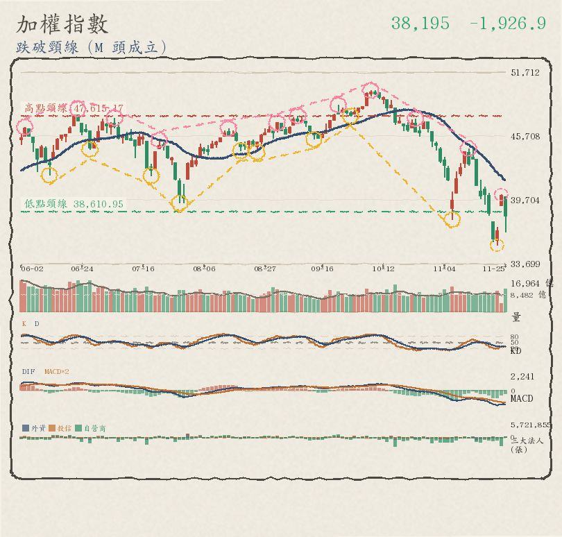
圖說：加權指數日 K（與個股圖相同標記）：黃圈＝轉折低點、粉圈＝轉折高點、虛線小圈＝還沒確認的轉折、藍線＝月線 MA20、水平虛線＝高點／低點頸線。最後一根是資料日當天。
本區塊為公開資料的技術面觀察，不構成投資建議，
不報牌、不預測、不下買賣決策。成交金額為集中市場總成交金額（含 ETF／權證），
與頁首摘要的「上市個股成交金額」口徑不同。標籤是統計，不是評分、也不是推薦。
上市 vs 上櫃（同期快篩）
加權 -4.80% vs 櫃買 -5.89%（同向） → 同向
（兩個市場分開寫，不合併成一個數字；櫃買為 TPEX 公開資料）
櫃買歷史：TPEX 逐日回補 130 根；來源：櫃買中心 www/zh-tw/indexInfo/sectinx（逐日，官方；OpenAPI tpex_index 只回當月）
（TPEX OpenAPI 只回當月，故逐日回補；歷史不足就不算該條均線並標「資料不足」，不用錯數字）
近 20 個交易日大盤狀態回溯（最新在上）（點開看逐日主狀態／量比／量價象限）
用同一支程式回算最近 20 個交易日（主狀態 S1~S8 與量比 20 皆為當日收盤當時的判定，
不是事後調整）；量比 20 未公布的日子寫「—」。
好條件最多的（前 10）
不好條件最多的（前 10）
好條件（7 項）：站上月線、月線向上、底底高、頭頭高、突破頸線、攻擊量（量增＋上漲）、守住今日高檔（距今日高點 1% 內）。
不好條件（7 項）：跌破前低、今日下跌、相對大盤弱、在月線之下、貼近今日低點（1% 內）、跌破昨日低點、月線下彎。
兩邊都是同一組日線資料＋盤中即時價算出來的「符合項目數」，只是把方向相反的條件分開數；
條件數不是評分或推薦，不構成投資建議。
盤中爆量（估量比 ≥ 1.5）（18 上市 15／上櫃 3）
跌破前低（線型轉弱）（31 上市 20／上櫃 11）
今日疲弱（跌幅前 10）（10 上市 7／上櫃 3）
逐檔（70 檔，依盤中成交金額排序）
台積電 2330 上市
2160 +10.0（+0.47%）
區間或轉弱 盤中成交值 742.78 億・全榜第 1 名（上市第 1 名）・相對大盤 -2.62
好條件 1/7：守住今日高檔（距今日高點 1% 內）
不好條件 3/7：相對大盤弱、在月線之下、月線下彎
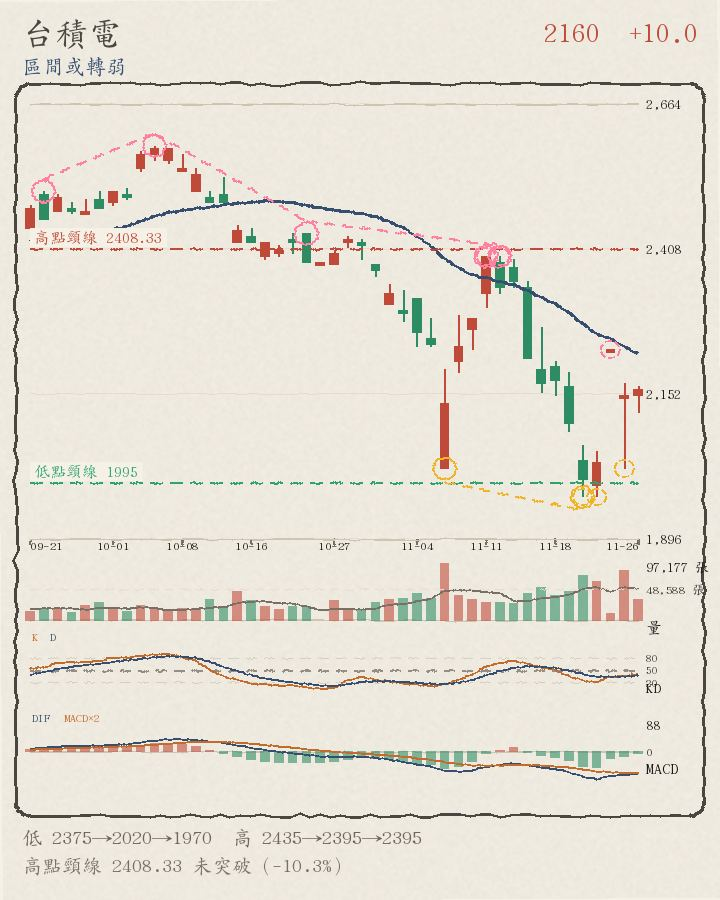
12:31 盤中 2160（+0.47%），比加權指數弱 2.62 個百分點、跌破月線 2236，離高點頸線 2408.33 還差 10.3%，轉折還沒走出明顯方向。
- 月線位置：現價 2160 在月線 2236 之下（-3.4%）；5 日線 2102 也在月線之下（短均在下）；月線向下
- 量能：以已過交易時間推估，今天成交量約是 20 日均量的 1.07 倍（量平），比 20 日均量大一些
- 關鍵價位：高點頸線 2408.33 還沒突破，差 10.3%；前一交易日高點 2170（低於 0.5%）；今天盤中高點 2165（低於 0.2%）；今天盤中低點 2120（高於 1.9%）
- 轉折結構：低點 2375、2020、1970 與高點 2435、2395、2395 都沒有明顯遞增，屬於區間震盪或轉弱；還沒確認的轉折低點 11-23 1970、11-25 2020；還沒確認的轉折高點 11-12 2395、11-24 2230（圖上虛線小圈）
量平
↑ 回上方清單
聯發科 2454 上市
3800 +155.0（+4.25%）
區間或轉弱 盤中成交值 463.68 億・全榜第 2 名（上市第 2 名）・相對大盤 +1.16
好條件 2/7：站上月線、攻擊量（量增＋上漲）
不好條件 1/7：月線下彎

12:31 盤中 3800（+4.25%），比加權指數強 1.16 個百分點、站上月線 3785.5，離高點頸線 4151.25 還差 8.5%，轉折還沒走出明顯方向。
- 月線位置：現價 3800 在月線 3785.5 之上（+0.4%）；5 日線 3690 也在月線之下（短均在下）；月線向下
- 量能：以已過交易時間推估，今天成交量約是 20 日均量的 1.24 倍（量增），比 20 日均量大不少；上漲又量增，量價配合
- 關鍵價位：高點頸線 4151.25 還沒突破，差 8.5%；前一交易日高點 3955（低於 3.9%）；今天盤中高點 3885（低於 2.2%）；今天盤中低點 3645（高於 4.3%）
- 轉折結構：低點 4875、3115、3350 與高點 5165、4245、4235 都沒有明顯遞增，屬於區間震盪或轉弱；還沒確認的轉折低點 11-23 3350、11-25 3645；還沒確認的轉折高點 11-18 4075、11-24 4050（圖上虛線小圈）
台光電 2383 上市
3625 +270.0（+8.05%）
區間或轉弱 盤中成交值 267.56 億・全榜第 3 名（上市第 3 名）・相對大盤 +4.96
好條件 1/7：攻擊量（量增＋上漲）
不好條件 3/7：跌破前低、在月線之下、月線下彎
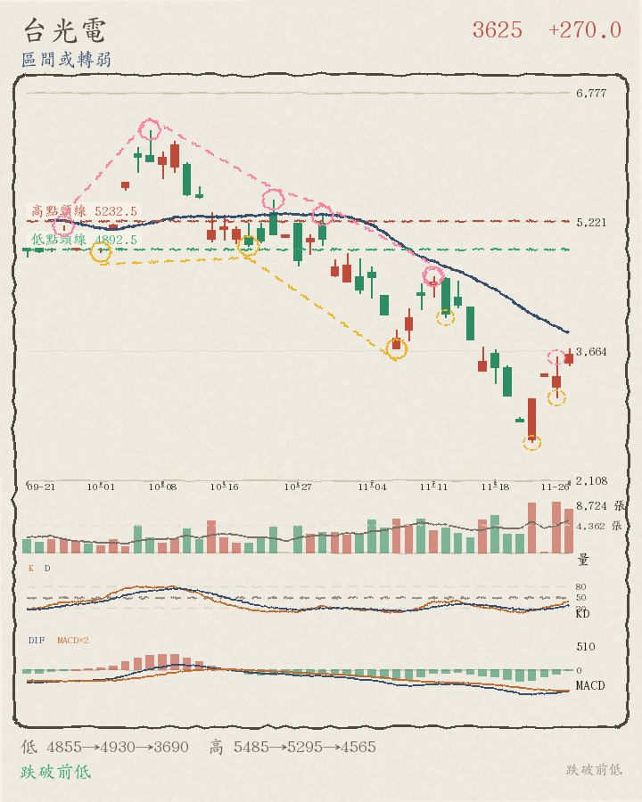
12:31 盤中 3625（+8.05%），比加權指數強 4.96 個百分點、跌破月線 3954.25，離高點頸線 5232.5 還差 30.7%，轉折還沒走出明顯方向。
- 月線位置：現價 3625 在月線 3954.25 之下（-8.3%）；5 日線 3154 也在月線之下（短均在下）；月線向下
- 量能：以已過交易時間推估，今天成交量約是 20 日均量的 2.27 倍（爆量），比 20 日均量大不少；上漲又量增，量價配合
- 關鍵價位：已跌破前一個轉折低點；高點頸線 5232.5 還在現價上方 30.7%；前一交易日高點 3590（高於 1.0%）；今天盤中高點 3690（低於 1.8%）；今天盤中低點 3485（高於 4.0%）
- 轉折結構：低點 4855、4930、3690 與高點 5485、5295、4565 都沒有明顯遞增，屬於區間震盪或轉弱；還沒確認的轉折低點 11-23 2560、11-25 3100；還沒確認的轉折高點 11-11 4565、11-25 3590（圖上虛線小圈）
欣興 3037 上市
643 +58.0（+9.91%）
區間或轉弱 盤中成交值 213.54 億・全榜第 4 名（上市第 4 名）・相對大盤 +6.82
好條件 1/7：攻擊量（量增＋上漲）
不好條件 3/7：跌破前低、在月線之下、月線下彎
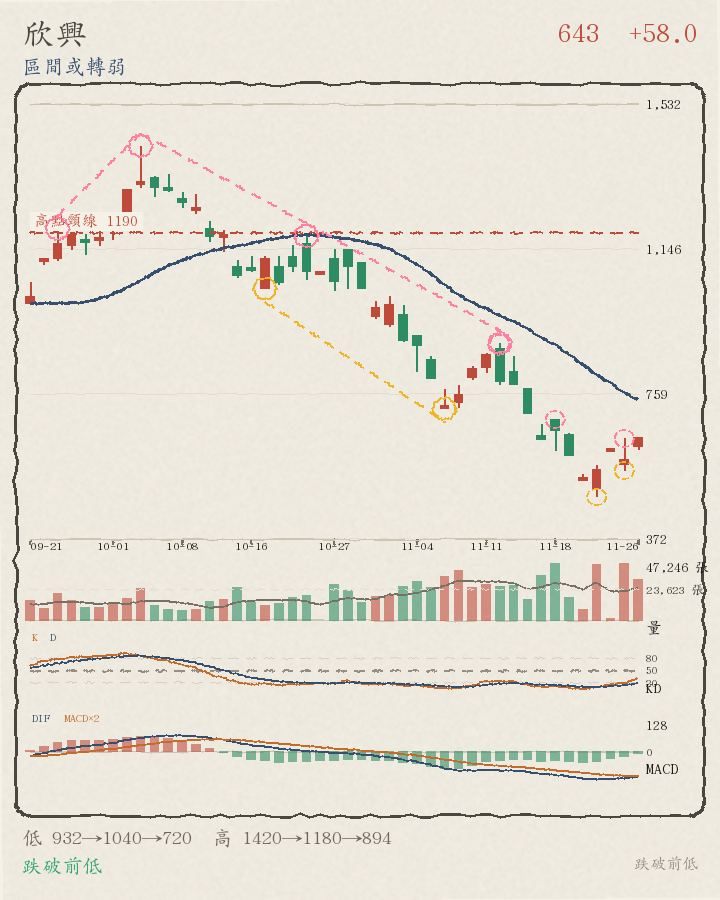
12:31 盤中 643（+9.91%），比加權指數強 6.82 個百分點、跌破月線 763.2，離高點頸線 1190 還差 46.0%，轉折還沒走出明顯方向。
- 月線位置：現價 643 在月線 763.2 之下（-15.8%）；5 日線 577.8 也在月線之下（短均在下）；月線向下
- 量能：以已過交易時間推估，今天成交量約是 20 日均量的 1.60 倍（爆量），比 20 日均量大不少；上漲又量增，量價配合
- 關鍵價位：已跌破前一個轉折低點；高點頸線 1190 還在現價上方 46.0%；前一交易日高點 640（高於 0.5%）；今天盤中高點 643（高於 0.0%）；今天盤中低點 612（高於 5.1%）
- 轉折結構：低點 932、1040、720 與高點 1420、1180、894 都沒有明顯遞增，屬於區間震盪或轉弱；還沒確認的轉折低點 11-23 484.5、11-25 555；還沒確認的轉折高點 11-18 691、11-25 640（圖上虛線小圈）
台達電 2308 上市
1140 +85.0（+8.06%）
區間或轉弱 盤中成交值 202.22 億・全榜第 5 名（上市第 5 名）・相對大盤 +4.97
好條件 2/7：突破頸線、攻擊量（量增＋上漲）
不好條件 2/7：在月線之下、月線下彎
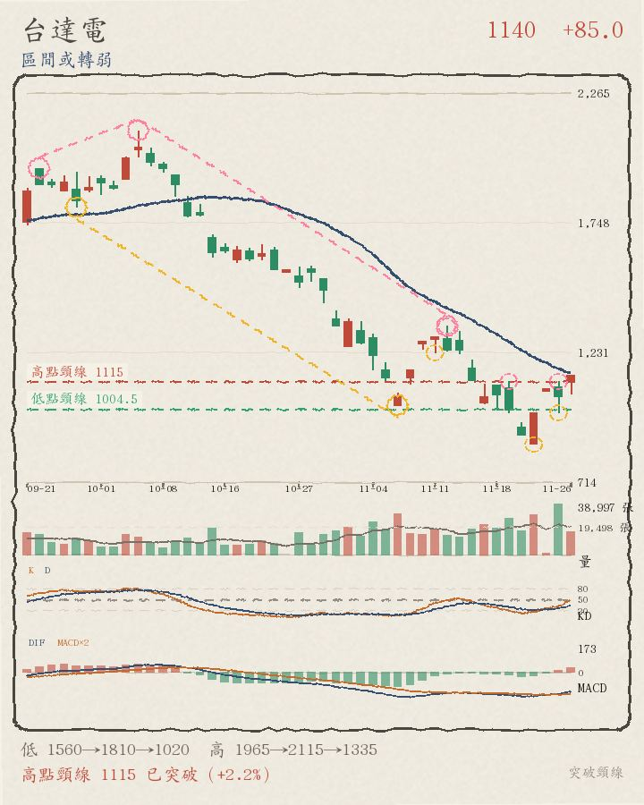
12:31 盤中 1140（+8.06%），比加權指數強 4.97 個百分點、跌破月線 1166，已突破高點頸線 1115，轉折還沒走出明顯方向。
- 月線位置：現價 1140 在月線 1166 之下（-2.2%）；5 日線 1006 也在月線之下（短均在下）；月線向下
- 量能：以已過交易時間推估，今天成交量約是 20 日均量的 1.23 倍（量增），比 20 日均量大不少；上漲又量增，量價配合
- 關鍵價位：高點頸線 1115 已站上；前一交易日高點 1115（高於 2.2%）；今天盤中高點 1140（高於 0.0%）；今天盤中低點 1065（高於 7.0%）
- 轉折結構：低點 1560、1810、1020 與高點 1965、2115、1335 都沒有明顯遞增，屬於區間震盪或轉弱；還沒確認的轉折低點 11-23 864、11-25 989；還沒確認的轉折高點 11-19 1115、11-25 1115（圖上虛線小圈）
台玻 1802 上市
59.2 -0.7（-1.17%）
區間或轉弱 盤中成交值 194.46 億・全榜第 6 名（上市第 6 名）・相對大盤 -4.26
好條件 0/7：無
不好條件 4/7：今日下跌、相對大盤弱、在月線之下、月線下彎
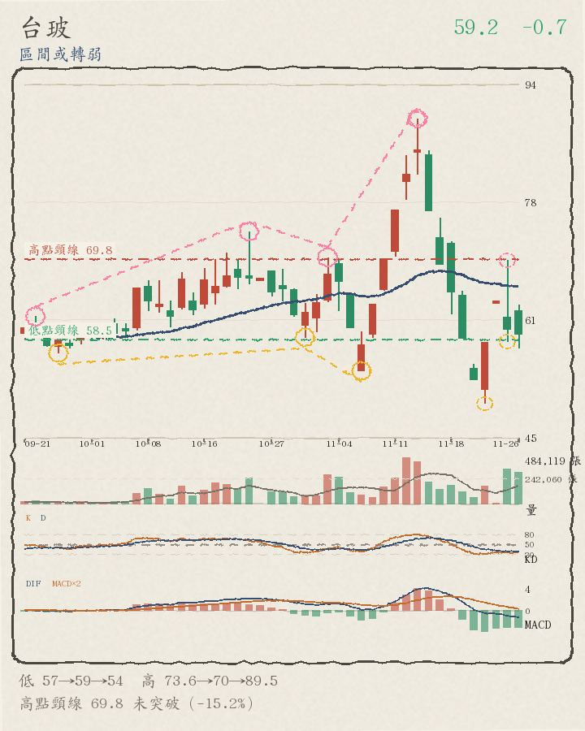
12:31 盤中 59.2（-1.17%），比加權指數弱 4.26 個百分點、跌破月線 66.07，離高點頸線 69.8 還差 15.2%，轉折還沒走出明顯方向。
- 月線位置：現價 59.2 在月線 66.07 之下（-10.4%）；5 日線 58.7 也在月線之下（短均在下）；月線向下
- 量能：以已過交易時間推估，今天成交量約是 20 日均量的 2.39 倍（爆量），比 20 日均量大不少；下跌卻量增，量價背離
- 關鍵價位：高點頸線 69.8 還沒突破，差 15.2%；前一交易日高點 69.6（低於 14.9%）；今天盤中高點 63.3（低於 6.5%）；今天盤中低點 57.3（高於 3.3%）
- 轉折結構：低點 56.6、58.8、54.1 與高點 73.6、70、89.5 都沒有明顯遞增，屬於區間震盪或轉弱；還沒確認的轉折低點 11-23 49.5、11-25 58.2；還沒確認的轉折高點 11-13 89.5、11-25 69.6（圖上虛線小圈）
景碩 3189 上市
534 +39.0（+7.88%）
區間或轉弱 盤中成交值 185.51 億・全榜第 7 名（上市第 7 名）・相對大盤 +4.79
好條件 1/7：攻擊量（量增＋上漲）
不好條件 3/7：跌破前低、在月線之下、月線下彎
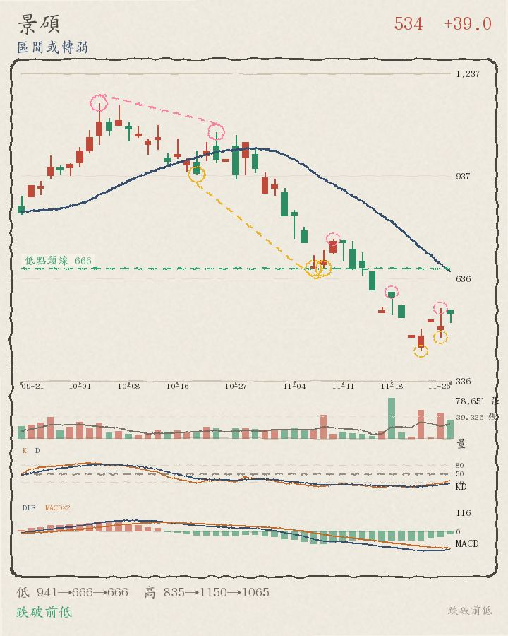
12:31 盤中 534（+7.88%），比加權指數強 4.79 個百分點、跌破月線 677.775，轉折還沒走出明顯方向。
- 月線位置：現價 534 在月線 677.775 之下（-21.2%）；5 日線 493.7 也在月線之下（短均在下）；月線向下
- 量能：以已過交易時間推估，今天成交量約是 20 日均量的 2.32 倍（爆量），比 20 日均量大不少；上漲又量增，量價配合
- 關鍵價位：前一交易日高點 549（低於 2.7%）；今天盤中高點 544（低於 1.8%）；今天盤中低點 507（高於 5.3%）
- 轉折結構：低點 941、666、666 與高點 835、1150、1065 都沒有明顯遞增，屬於區間震盪或轉弱；還沒確認的轉折低點 11-23 423、11-25 463；還沒確認的轉折高點 11-18 596、11-25 549（圖上虛線小圈）
南亞 1303 上市
245.5 +19.0（+8.39%）
區間或轉弱 盤中成交值 175.05 億・全榜第 8 名（上市第 8 名）・相對大盤 +5.30
好條件 0/7：無
不好條件 2/7：在月線之下、月線下彎
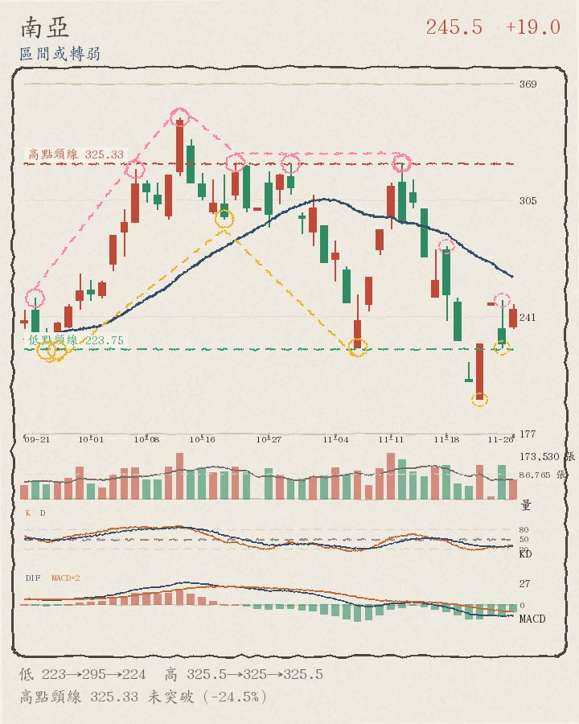
12:31 盤中 245.5（+8.39%），比加權指數強 5.30 個百分點、跌破月線 266.625，離高點頸線 325.33 還差 24.5%，轉折還沒走出明顯方向。
- 月線位置：現價 245.5 在月線 266.625 之下（-7.9%）；5 日線 227.3 也在月線之下（短均在下）；月線向下
- 量能：以已過交易時間推估，今天成交量約是 20 日均量的 0.97 倍（量平），跟 20 日均量差不多
- 關鍵價位：高點頸線 325.33 還沒突破，差 24.5%；前一交易日高點 250.5（低於 2.0%）；今天盤中高點 248（低於 1.0%）；今天盤中低點 235（高於 4.5%）
- 轉折結構：低點 223、295、224.5 與高點 325.5、325、325.5 都沒有明顯遞增，屬於區間震盪或轉弱；還沒確認的轉折低點 11-23 196、11-25 224.5；還沒確認的轉折高點 11-18 280、11-25 250.5（圖上虛線小圈）
量平
↑ 回上方清單
聯電 2303 上市
89.7 +2.3（+2.63%）
區間或轉弱 盤中成交值 147.59 億・全榜第 9 名（上市第 9 名）・相對大盤 -0.46
好條件 1/7：攻擊量（量增＋上漲）
不好條件 3/7：相對大盤弱、在月線之下、月線下彎
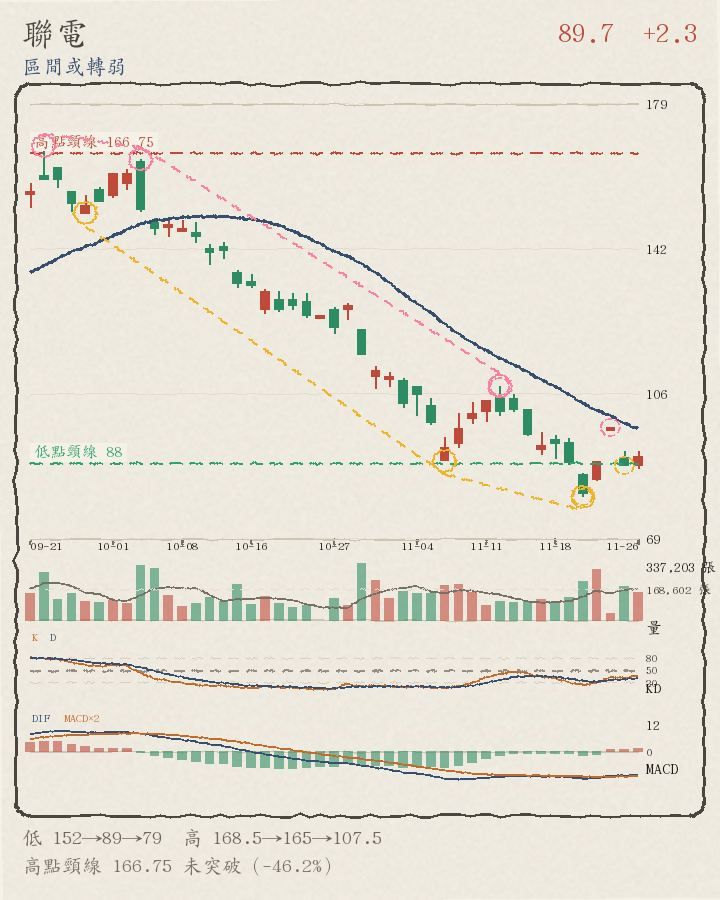
12:31 盤中 89.7（+2.63%），比加權指數弱 0.46 個百分點、跌破月線 98.075，離高點頸線 166.75 還差 46.2%，轉折還沒走出明顯方向。
- 月線位置：現價 89.7 在月線 98.075 之下（-8.5%）；5 日線 88.26 也在月線之下（短均在下）；月線向下
- 量能：以已過交易時間推估，今天成交量約是 20 日均量的 1.33 倍（量增），比 20 日均量大不少；上漲又量增，量價配合
- 關鍵價位：高點頸線 166.75 還沒突破，差 46.2%；前一交易日高點 91（低於 1.4%）；今天盤中高點 90.9（低於 1.3%）；今天盤中低點 86.6（高於 3.6%）
- 轉折結構：低點 151.5、88.6、79.4 與高點 168.5、165、107.5 都沒有明顯遞增，屬於區間震盪或轉弱；還沒確認的轉折低點 11-20 79.4、11-25 87.4；還沒確認的轉折高點 11-12 107.5、11-24 97.1（圖上虛線小圈）
量增
↑ 回上方清單
日月光投控 3711 上市
519 +31.0（+6.35%）
區間或轉弱 盤中成交值 132.79 億・全榜第 10 名（上市第 10 名）・相對大盤 +3.26
好條件 1/7：攻擊量（量增＋上漲）
不好條件 2/7：在月線之下、月線下彎
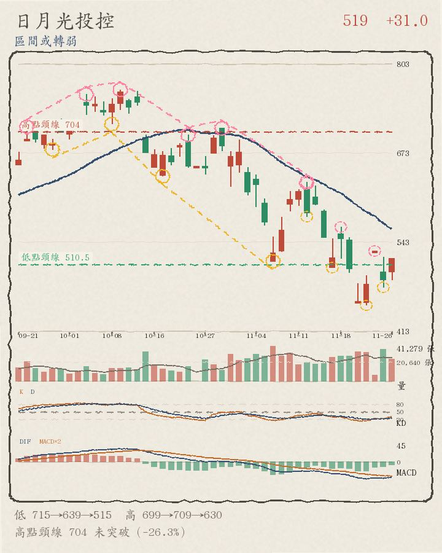
12:31 盤中 519（+6.35%），比加權指數強 3.26 個百分點、跌破月線 570.65，離高點頸線 704 還差 26.3%，轉折還沒走出明顯方向。
- 月線位置：現價 519 在月線 570.65 之下（-9.1%）；5 日線 492.2 也在月線之下（短均在下）；月線向下
- 量能：以已過交易時間推估，今天成交量約是 20 日均量的 1.25 倍（量增），比 20 日均量大不少；上漲又量增，量價配合
- 關鍵價位：高點頸線 704 還沒突破，差 26.3%；前一交易日高點 521（低於 0.4%）；今天盤中高點 519（高於 0.0%）；今天盤中低點 488.5（高於 6.2%）
- 轉折結構：低點 715、639、515 與高點 699、709、630 都沒有明顯遞增，屬於區間震盪或轉弱；還沒確認的轉折低點 11-23 451、11-25 477；還沒確認的轉折高點 11-18 565、11-24 530（圖上虛線小圈）
量增
↑ 回上方清單
金像電 2368 上市
992 +87.0（+9.61%）
區間或轉弱 盤中成交值 124.97 億・全榜第 11 名（上市第 11 名）・相對大盤 +6.52
好條件 4/7：站上月線、突破頸線、攻擊量（量增＋上漲）、守住今日高檔（距今日高點 1% 內）
不好條件 1/7：月線下彎
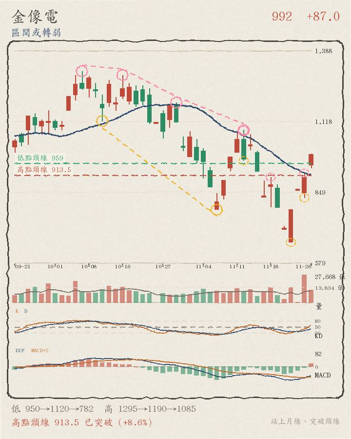
12:31 盤中 992（+9.61%），比加權指數強 6.52 個百分點、站上月線 921.45，已突破高點頸線 913.5，轉折還沒走出明顯方向。
- 月線位置：現價 992 在月線 921.45 之上（+7.7%）；5 日線 809.6 也在月線之下（短均在下）；月線向下
- 量能：以已過交易時間推估，今天成交量約是 20 日均量的 1.68 倍（爆量），比 20 日均量大不少；上漲又量增，量價配合
- 關鍵價位：高點頸線 913.5 已站上；前一交易日高點 921（高於 7.7%）；今天盤中高點 994（低於 0.2%）；今天盤中低點 940（高於 5.5%）
- 轉折結構：低點 950、1120、782 與高點 1295、1190、1085 都沒有明顯遞增，屬於區間震盪或轉弱；還沒確認的轉折低點 11-23 657、11-25 827；還沒確認的轉折高點 11-18 906、11-25 921（圖上虛線小圈）
台燿 6274 上櫃
801 +62.0（+8.39%）
區間或轉弱 盤中成交值 115.51 億・全榜第 12 名（上櫃第 1 名）・相對大盤 +5.30
好條件 1/7：攻擊量（量增＋上漲）
不好條件 3/7：跌破前低、在月線之下、月線下彎
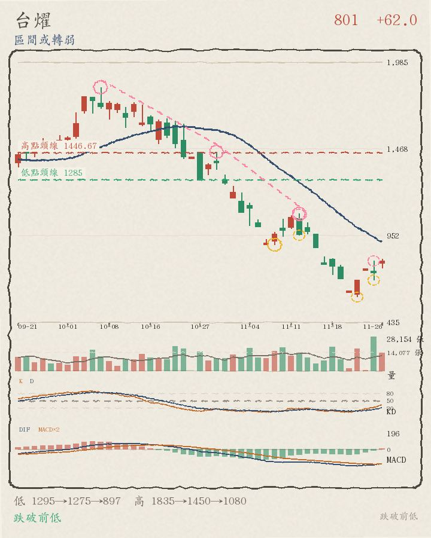
12:31 盤中 801（+8.39%），比加權指數強 5.30 個百分點、跌破月線 942.1，離高點頸線 1446.67 還差 44.6%，轉折還沒走出明顯方向。
- 月線位置：現價 801 在月線 942.1 之下（-15.0%）；5 日線 698.4 也在月線之下（短均在下）；月線向下
- 量能：以已過交易時間推估，今天成交量約是 20 日均量的 1.62 倍（爆量），比 20 日均量大不少；上漲又量增，量價配合
- 關鍵價位：已跌破前一個轉折低點；高點頸線 1446.67 還在現價上方 44.6%；前一交易日高點 801（高於 0.0%）；今天盤中高點 812（低於 1.4%）；今天盤中低點 756（高於 6.0%）
- 轉折結構：低點 1295、1275、897 與高點 1835、1450、1080 都沒有明顯遞增，屬於區間震盪或轉弱；還沒確認的轉折低點 11-23 585、11-25 685；還沒確認的轉折高點 11-12 1080、11-25 801（圖上虛線小圈）
南亞科 2408 上市
304.5 +26.0（+9.34%）
區間或轉弱 盤中成交值 107.89 億・全榜第 13 名（上市第 12 名）・相對大盤 +6.25
好條件 1/7：守住今日高檔（距今日高點 1% 內）
不好條件 3/7：跌破前低、在月線之下、月線下彎
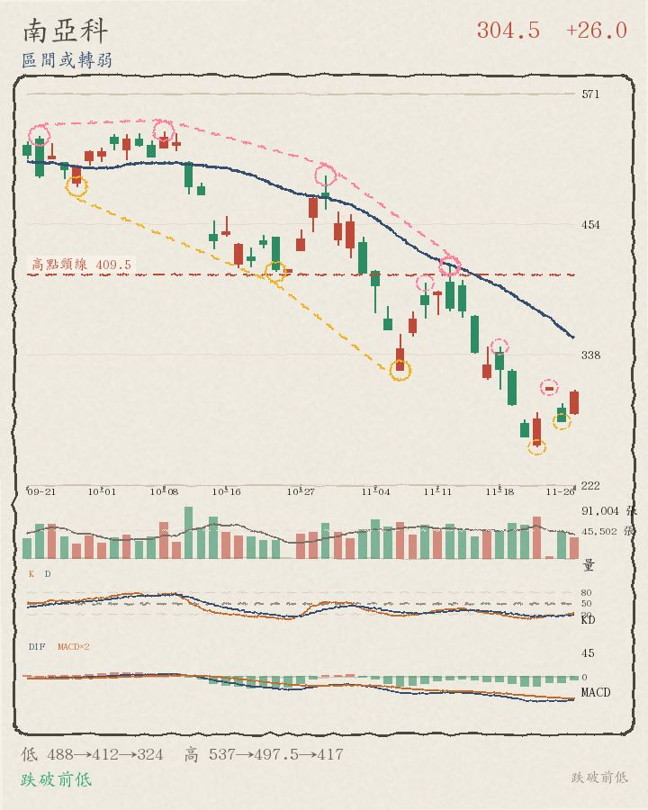
12:31 盤中 304.5（+9.34%），比加權指數強 6.25 個百分點、跌破月線 361.3，離高點頸線 409.5 還差 25.6%，轉折還沒走出明顯方向。
- 月線位置：現價 304.5 在月線 361.3 之下（-15.7%）；5 日線 285.3 也在月線之下（短均在下）；月線向下
- 量能：以已過交易時間推估，今天成交量約是 20 日均量的 0.90 倍（量平），比 20 日均量少一些
- 關鍵價位：已跌破前一個轉折低點；高點頸線 409.5 還在現價上方 25.6%；前一交易日高點 294.5（高於 3.4%）；今天盤中高點 306（低於 0.5%）；今天盤中低點 285（高於 6.8%）
- 轉折結構：低點 488、412、324 與高點 537、497.5、417 都沒有明顯遞增，屬於區間震盪或轉弱；還沒確認的轉折低點 11-23 255.5、11-25 278.5；還沒確認的轉折高點 11-18 345、11-24 309（圖上虛線小圈）
世芯-KY 3661 上市
3805 +200.0（+5.55%）
區間或轉弱 盤中成交值 102.85 億・全榜第 14 名（上市第 13 名）・相對大盤 +2.46
好條件 2/7：站上月線、攻擊量（量增＋上漲）
不好條件 1/7：月線下彎
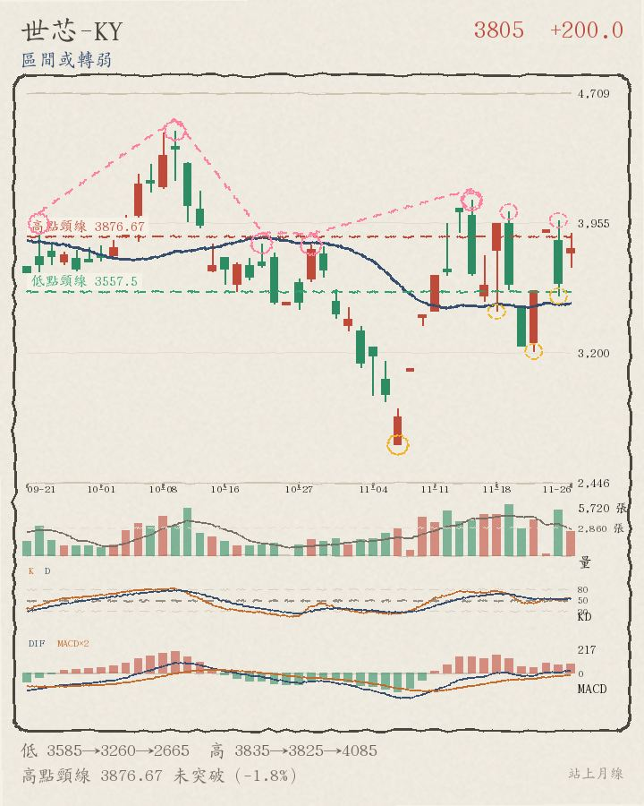
12:31 盤中 3805（+5.55%），比加權指數強 2.46 個百分點、站上月線 3480.5，離高點頸線 3876.67 還差 1.8%，轉折還沒走出明顯方向。
- 月線位置：現價 3805 在月線 3480.5 之上（+9.3%）；5 日線 3584 也在月線之上（短均在上）；月線向下
- 量能：以已過交易時間推估，今天成交量約是 20 日均量的 1.18 倍（量增），比 20 日均量大不少；上漲又量增，量價配合
- 關鍵價位：高點頸線 3876.67 還沒突破，差 1.8%；前一交易日高點 3970（低於 4.2%）；今天盤中高點 3895（低於 2.3%）；今天盤中低點 3695（高於 3.0%）
- 轉折結構：低點 3585、3260、2665 與高點 3835、3825、4085 都沒有明顯遞增，屬於區間震盪或轉弱；還沒確認的轉折低點 11-23 3210、11-25 3530；還沒確認的轉折高點 11-19 4020、11-25 3970（圖上虛線小圈）
鴻海 2317 上市
219 +12.5（+6.05%）
區間或轉弱 盤中成交值 91.09 億・全榜第 15 名（上市第 14 名）・相對大盤 +2.96
好條件 2/7：攻擊量（量增＋上漲）、守住今日高檔（距今日高點 1% 內）
不好條件 2/7：在月線之下、月線下彎
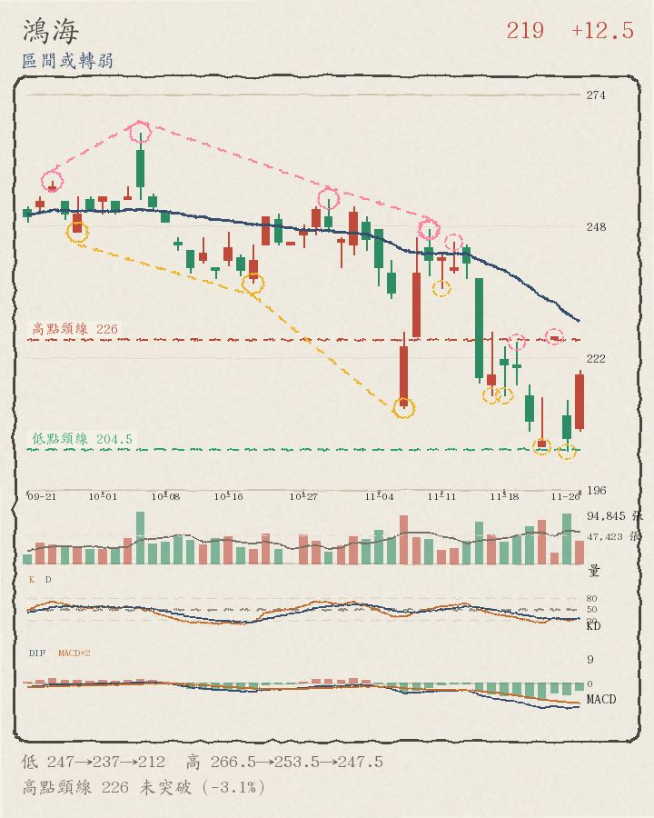
12:31 盤中 219（+6.05%），比加權指數強 2.96 個百分點、跌破月線 231.05，離高點頸線 226 還差 3.1%，轉折還沒走出明顯方向。
- 月線位置：現價 219 在月線 231.05 之下（-5.2%）；5 日線 213.9 也在月線之下（短均在下）；月線向下
- 量能：以已過交易時間推估，今天成交量約是 20 日均量的 1.12 倍（量增），比 20 日均量大一些；上漲又量增，量價配合
- 關鍵價位：高點頸線 226 還沒突破，差 3.1%；前一交易日高點 214（高於 2.3%）；今天盤中高點 220（低於 0.5%）；今天盤中低點 208（高於 5.3%）
- 轉折結構：低點 247、237、212.5 與高點 266.5、253.5、247.5 都沒有明顯遞增，屬於區間震盪或轉弱；還沒確認的轉折低點 11-23 205、11-25 204；還沒確認的轉折高點 11-19 225.5、11-24 226.5（圖上虛線小圈）
量增
↑ 回上方清單
國巨* 2327 上市
339.5 +30.5（+9.87%）
區間或轉弱 盤中成交值 87.62 億・全榜第 16 名（上市第 15 名）・相對大盤 +6.78
好條件 0/7：無
不好條件 3/7：跌破前低、在月線之下、月線下彎
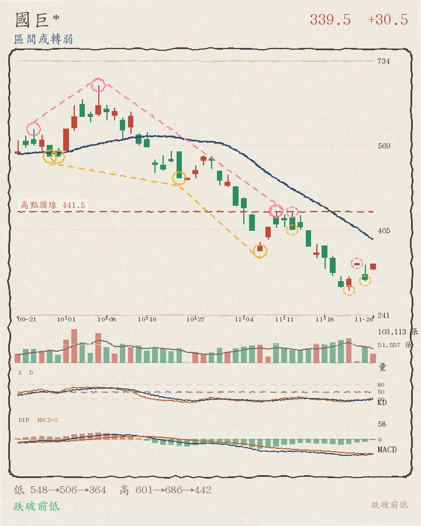
12:31 盤中 339.5（+9.87%），比加權指數強 6.78 個百分點、跌破月線 397.975，離高點頸線 441.5 還差 23.1%，轉折還沒走出明顯方向。
- 月線位置：現價 339.5 在月線 397.975 之下（-14.7%）；5 日線 315.7 也在月線之下（短均在下）；月線向下
- 量能：以已過交易時間推估，今天成交量約是 20 日均量的 0.75 倍（量平），比 20 日均量少很多；上漲但量縮，量價背離
- 關鍵價位：已跌破前一個轉折低點；高點頸線 441.5 還在現價上方 23.1%；前一交易日高點 338（高於 0.4%）；今天盤中高點 339.5（高於 0.0%）；今天盤中低點 329（高於 3.2%）
- 轉折結構：低點 548、506、364.5 與高點 601、686、442 都沒有明顯遞增，屬於區間震盪或轉弱；還沒確認的轉折低點 11-23 288.5、11-25 307；還沒確認的轉折高點 11-12 441、11-24 341（圖上虛線小圈）
智邦 2345 上市
1620 +145.0（+9.83%）
高點墊高、底部不穩 盤中成交值 85.68 億・全榜第 17 名（上市第 16 名）・相對大盤 +6.74
好條件 4/7：站上月線、頭頭高、突破頸線、攻擊量（量增＋上漲）
不好條件 1/7：月線下彎
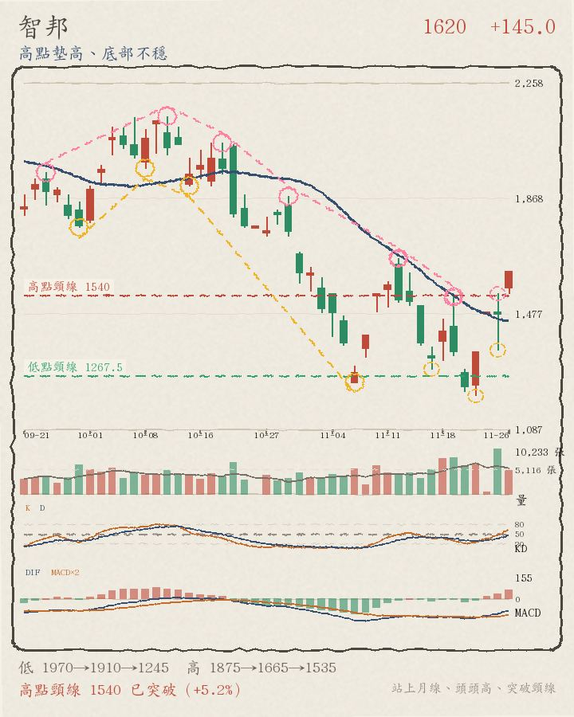
12:31 盤中 1620（+9.83%），比加權指數強 6.74 個百分點、站上月線 1460.5，已突破高點頸線 1540，高點還在墊高（但底部沒同步墊高）。
- 月線位置：現價 1620 在月線 1460.5 之上（+10.9%）；5 日線 1378 也在月線之下（短均在下）；月線向下
- 量能：以已過交易時間推估，今天成交量約是 20 日均量的 1.44 倍（量增），比 20 日均量大不少；上漲又量增，量價配合
- 關鍵價位：高點頸線 1540 已站上；前一交易日高點 1545（高於 4.9%）；今天盤中高點 1620（高於 0.0%）；今天盤中低點 1545（高於 4.9%）
- 轉折結構：高點 1875、1665、1535 墊高（頭頭高），但低點 1970、1910、1245 沒有同步墊高；還沒確認的轉折低點 11-23 1200、11-25 1355；還沒確認的轉折高點 11-19 1535、11-25 1545（圖上虛線小圈）
精材 3374 上櫃
339.5 +3.5（+1.04%）
區間或轉弱 盤中成交值 79.15 億・全榜第 18 名（上櫃第 2 名）・相對大盤 -2.05
好條件 1/7：攻擊量（量增＋上漲）
不好條件 4/7：跌破前低、相對大盤弱、在月線之下、月線下彎
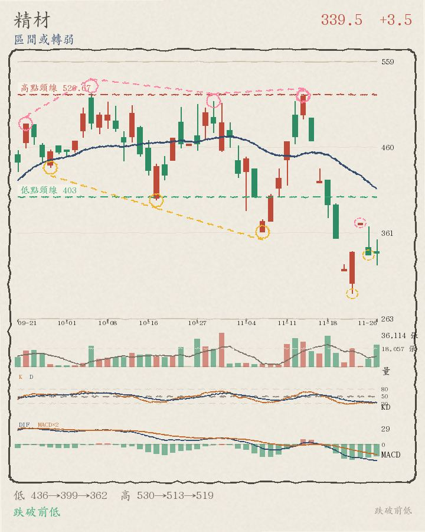
12:31 盤中 339.5（+1.04%），比加權指數弱 2.05 個百分點、跌破月線 419.65，離高點頸線 520.67 還差 34.8%，轉折還沒走出明顯方向。
- 月線位置：現價 339.5 在月線 419.65 之下（-19.1%）；5 日線 344.6 也在月線之下（短均在下）；月線向下
- 量能：以已過交易時間推估，今天成交量約是 20 日均量的 2.15 倍（爆量），比 20 日均量大不少；上漲又量增，量價配合
- 關鍵價位：已跌破前一個轉折低點；高點頸線 520.67 還在現價上方 34.8%；前一交易日高點 368.5（低於 7.9%）；今天盤中高點 353.5（低於 4.0%）；今天盤中低點 324.5（高於 4.6%）
- 轉折結構：低點 436.5、399、362.5 與高點 530、513、519 都沒有明顯遞增，屬於區間震盪或轉弱；還沒確認的轉折低點 11-23 291.5、11-25 336；還沒確認的轉折高點 11-13 519、11-24 373（圖上虛線小圈）
創意 3443 上市
5450 +380.0（+7.50%）
區間或轉弱 盤中成交值 78.43 億・全榜第 19 名（上市第 17 名）・相對大盤 +4.41
好條件 0/7：無
不好條件 3/7：跌破前低、在月線之下、月線下彎
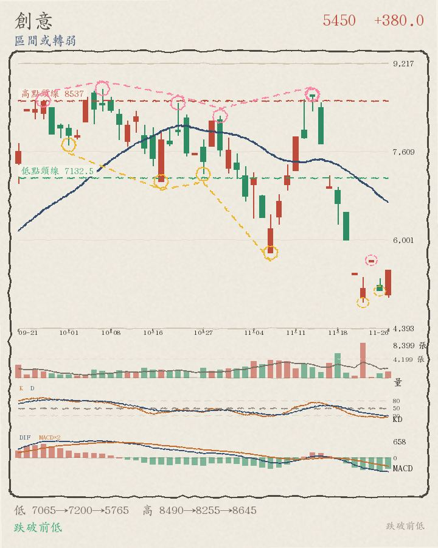
12:31 盤中 5450（+7.50%），比加權指數強 4.41 個百分點、跌破月線 6796，離高點頸線 8537 還差 36.2%，轉折還沒走出明顯方向。
- 月線位置：現價 5450 在月線 6796 之下（-19.8%）；5 日線 5444 也在月線之下（短均在下）；月線向下
- 量能：以已過交易時間推估，今天成交量約是 20 日均量的 0.64 倍（量縮），比 20 日均量少很多；上漲但量縮，量價背離
- 關鍵價位：已跌破前一個轉折低點；高點頸線 8537 還在現價上方 36.2%；前一交易日高點 5300（高於 2.8%）；今天盤中高點 5450（高於 0.0%）；今天盤中低點 4950（高於 10.1%）
- 轉折結構：低點 7065、7200、5765 與高點 8490、8255、8645 都沒有明顯遞增，屬於區間震盪或轉弱；還沒確認的轉折低點 11-23 4860、11-25 5070；還沒確認的轉折高點 11-13 8645、11-24 5630（圖上虛線小圈）
聯茂 6213 上市
427.5 +37.5（+9.62%）
區間或轉弱 盤中成交值 77.17 億・全榜第 20 名（上市第 18 名）・相對大盤 +6.53
好條件 2/7：攻擊量（量增＋上漲）、守住今日高檔（距今日高點 1% 內）
不好條件 3/7：跌破前低、在月線之下、月線下彎
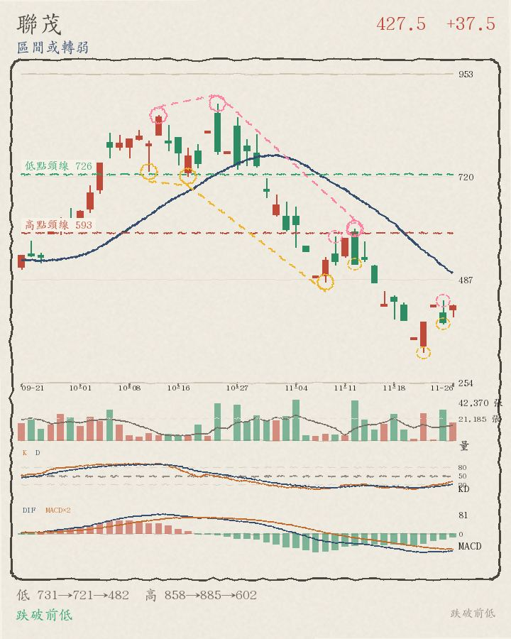
12:31 盤中 427.5（+9.62%），比加權指數強 6.53 個百分點、跌破月線 517.65，離高點頸線 593 還差 27.9%，轉折還沒走出明顯方向。
- 月線位置：現價 427.5 在月線 517.65 之下（-17.4%）；5 日線 392.3 也在月線之下（短均在下）；月線向下
- 量能：以已過交易時間推估，今天成交量約是 20 日均量的 1.37 倍（量增），比 20 日均量大不少；上漲又量增，量價配合
- 關鍵價位：已跌破前一個轉折低點；高點頸線 593 還在現價上方 27.9%；前一交易日高點 439（低於 2.6%）；今天盤中高點 429（低於 0.3%）；今天盤中低點 402（高於 6.3%）
- 轉折結構：低點 731、721、481.5 與高點 858、885、602 都沒有明顯遞增，屬於區間震盪或轉弱；還沒確認的轉折低點 11-23 321.5、11-25 387；還沒確認的轉折高點 11-12 602、11-25 439（圖上虛線小圈）
南電 8046 上市
731 +66.0（+9.92%）
區間或轉弱 盤中成交值 75.46 億・全榜第 21 名（上市第 19 名）・相對大盤 +6.83
好條件 1/7：攻擊量（量增＋上漲）
不好條件 3/7：跌破前低、在月線之下、月線下彎
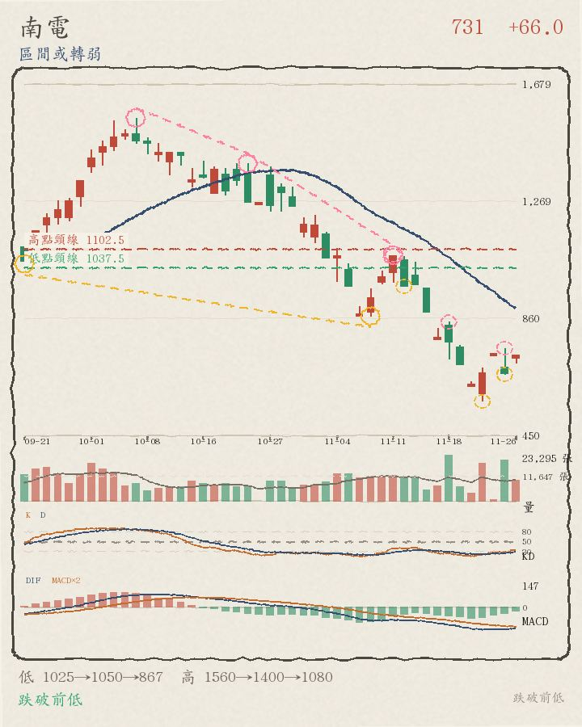
12:31 盤中 731（+9.92%），比加權指數強 6.83 個百分點、跌破月線 921.75，離高點頸線 1102.5 還差 33.7%，轉折還沒走出明顯方向。
- 月線位置：現價 731 在月線 921.75 之下（-20.7%）；5 日線 679.8 也在月線之下（短均在下）；月線向下
- 量能：以已過交易時間推估，今天成交量約是 20 日均量的 1.27 倍（量增），比 20 日均量大不少；上漲又量增，量價配合
- 關鍵價位：已跌破前一個轉折低點；高點頸線 1102.5 還在現價上方 33.7%；前一交易日高點 755（低於 3.2%）；今天盤中高點 731（高於 0.0%）；今天盤中低點 704（高於 3.8%）
- 轉折結構：低點 1025、1050、867 與高點 1560、1400、1080 都沒有明顯遞增，屬於區間震盪或轉弱；還沒確認的轉折低點 11-23 569、11-25 664；還沒確認的轉折高點 11-18 846、11-25 755（圖上虛線小圈）
奇鋐 3017 上市
2795 +250.0（+9.82%）
區間或轉弱 盤中成交值 66.69 億・全榜第 22 名（上市第 20 名）・相對大盤 +6.73
好條件 2/7：站上月線、突破頸線
不好條件 1/7：月線下彎
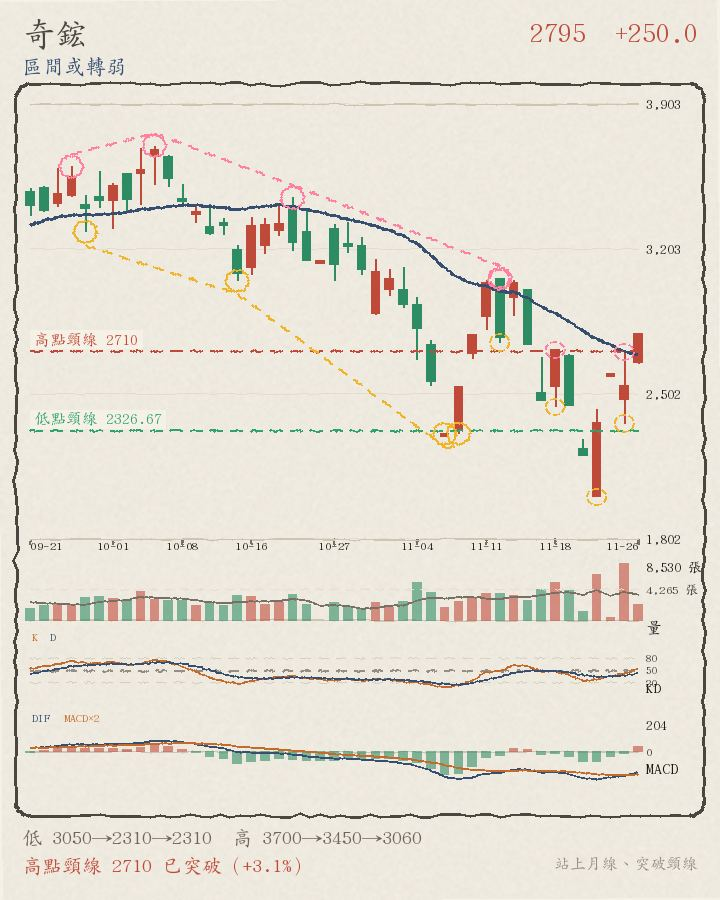
12:31 盤中 2795（+9.82%），比加權指數強 6.73 個百分點、站上月線 2708，已突破高點頸線 2710，轉折還沒走出明顯方向。
- 月線位置：現價 2795 在月線 2708 之上（+3.2%）；5 日線 2432 也在月線之下（短均在下）；月線向下
- 量能：以已過交易時間推估，今天成交量約是 20 日均量的 0.92 倍（量平），比 20 日均量少一些
- 關鍵價位：高點頸線 2710 已站上；前一交易日高點 2705（高於 3.3%）；今天盤中高點 2795（高於 0.0%）；今天盤中低點 2650（高於 5.5%）
- 轉折結構：低點 3050、2310、2310 與高點 3700、3450、3060 都沒有明顯遞增，屬於區間震盪或轉弱；還沒確認的轉折低點 11-23 2005、11-25 2360；還沒確認的轉折高點 11-18 2715、11-25 2705（圖上虛線小圈）
群聯 8299 上櫃
1630 +145.0（+9.76%）
區間或轉弱 盤中成交值 65.85 億・全榜第 23 名（上櫃第 3 名）・相對大盤 +6.67
好條件 3/7：站上月線、突破頸線、攻擊量（量增＋上漲）
不好條件 1/7：月線下彎
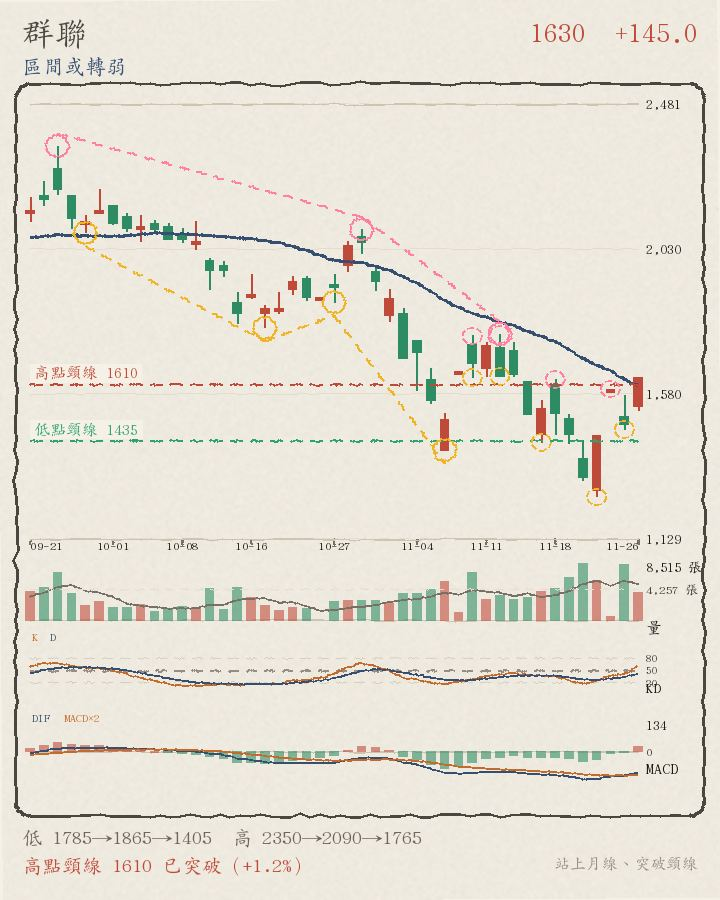
12:31 盤中 1630（+9.76%），比加權指數強 6.67 個百分點、站上月線 1626，已突破高點頸線 1610，轉折還沒走出明顯方向。
- 月線位置：現價 1630 在月線 1626 之上（+0.2%）；5 日線 1461 也在月線之下（短均在下）；月線向下
- 量能：以已過交易時間推估，今天成交量約是 20 日均量的 1.27 倍（量增），比 20 日均量大不少；上漲又量增，量價配合
- 關鍵價位：高點頸線 1610 已站上；前一交易日高點 1575（高於 3.5%）；今天盤中高點 1630（高於 0.0%）；今天盤中低點 1530（高於 6.5%）
- 轉折結構：低點 1785、1865、1405 與高點 2350、2090、1765 都沒有明顯遞增，屬於區間震盪或轉弱；還沒確認的轉折低點 11-23 1260、11-25 1470；還沒確認的轉折高點 11-18 1625、11-24 1595（圖上虛線小圈）
貿聯-KY 3665 上市
1790 +160.0（+9.82%）
高點墊高、底部不穩 盤中成交值 64.76 億・全榜第 24 名（上市第 21 名）・相對大盤 +6.73
好條件 4/7：站上月線、頭頭高、突破頸線、攻擊量（量增＋上漲）
不好條件 1/7：月線下彎
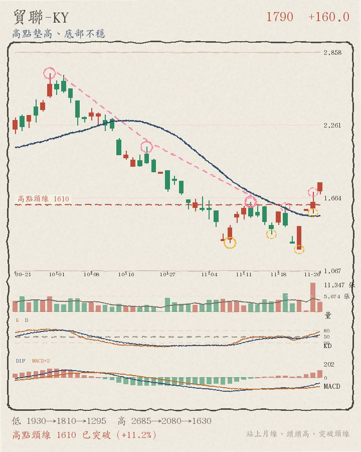
12:31 盤中 1790（+9.82%），比加權指數強 6.73 個百分點、站上月線 1513，已突破高點頸線 1610，高點還在墊高（但底部沒同步墊高）。
- 月線位置：現價 1790 在月線 1513 之上（+18.3%）；5 日線 1474 也在月線之下（短均在下）；月線向下
- 量能：以已過交易時間推估，今天成交量約是 20 日均量的 1.29 倍（量增），比 20 日均量大不少；上漲又量增，量價配合
- 關鍵價位：高點頸線 1610 已站上；前一交易日高點 1710（高於 4.7%）；今天盤中高點 1790（高於 0.0%）；今天盤中低點 1695（高於 5.6%）
- 轉折結構：高點 2685、2080、1630 墊高（頭頭高），但低點 1930、1810、1295 沒有同步墊高；還沒確認的轉折低點 11-23 1240、11-25 1540；還沒確認的轉折高點 11-19 1590、11-25 1710（圖上虛線小圈）
穩懋 3105 上櫃
444.5 +40.0（+9.89%）
區間或轉弱 盤中成交值 62.65 億・全榜第 25 名（上櫃第 4 名）・相對大盤 +6.80
好條件 0/7：無
不好條件 2/7：在月線之下、月線下彎
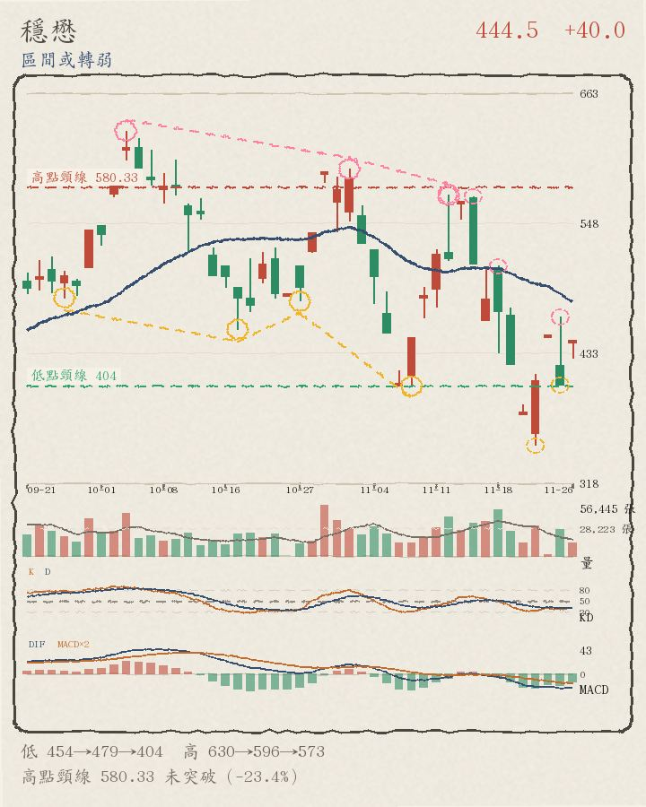
12:31 盤中 444.5（+9.89%），比加權指數強 6.80 個百分點、跌破月線 485.7，離高點頸線 580.33 還差 23.4%，轉折還沒走出明顯方向。
- 月線位置：現價 444.5 在月線 485.7 之下（-8.5%）；5 日線 413.2 也在月線之下（短均在下）；月線向下
- 量能：以已過交易時間推估，今天成交量約是 20 日均量的 0.63 倍（量縮），比 20 日均量少很多；上漲但量縮，量價背離
- 關鍵價位：高點頸線 580.33 還沒突破，差 23.4%；前一交易日高點 465（低於 4.4%）；今天盤中高點 444.5（高於 0.0%）；今天盤中低點 428.5（高於 3.7%）
- 轉折結構：低點 454、479、403.5 與高點 630、596、573 都沒有明顯遞增，屬於區間震盪或轉弱；還沒確認的轉折低點 11-23 351、11-25 404.5；還沒確認的轉折高點 11-18 510、11-25 465（圖上虛線小圈）
量縮
↑ 回上方清單
華通 2313 上市
168 +15.0（+9.80%）
區間或轉弱 盤中成交值 62.04 億・全榜第 26 名（上市第 22 名）・相對大盤 +6.71
好條件 1/7：攻擊量（量增＋上漲）
不好條件 2/7：在月線之下、月線下彎
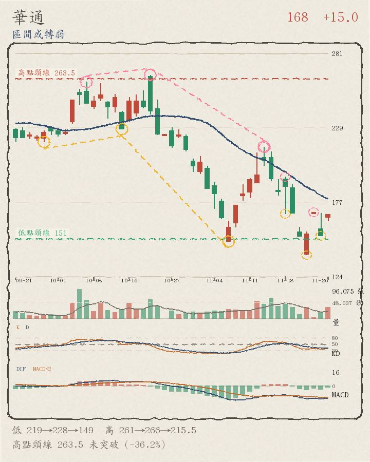
12:31 盤中 168（+9.80%），比加權指數強 6.71 個百分點、跌破月線 181.4，離高點頸線 263.5 還差 36.2%，轉折還沒走出明顯方向。
- 月線位置：現價 168 在月線 181.4 之下（-7.4%）；5 日線 159.7 也在月線之下（短均在下）；月線向下
- 量能：以已過交易時間推估，今天成交量約是 20 日均量的 1.61 倍（爆量），比 20 日均量大不少；上漲又量增，量價配合
- 關鍵價位：高點頸線 263.5 還沒突破，差 36.2%；前一交易日高點 169（低於 0.6%）；今天盤中高點 168（高於 0.0%）；今天盤中低點 163.5（高於 2.8%）
- 轉折結構：低點 219、228、149 與高點 261、266、215.5 都沒有明顯遞增，屬於區間震盪或轉弱；還沒確認的轉折低點 11-23 139.5、11-25 153；還沒確認的轉折高點 11-18 194.5、11-24 169.5（圖上虛線小圈）
京元電子 2449 上市
188 +15.0（+8.67%）
區間或轉弱 盤中成交值 61.71 億・全榜第 27 名（上市第 23 名）・相對大盤 +5.58
好條件 2/7：攻擊量（量增＋上漲）、守住今日高檔（距今日高點 1% 內）
不好條件 3/7：跌破前低、在月線之下、月線下彎
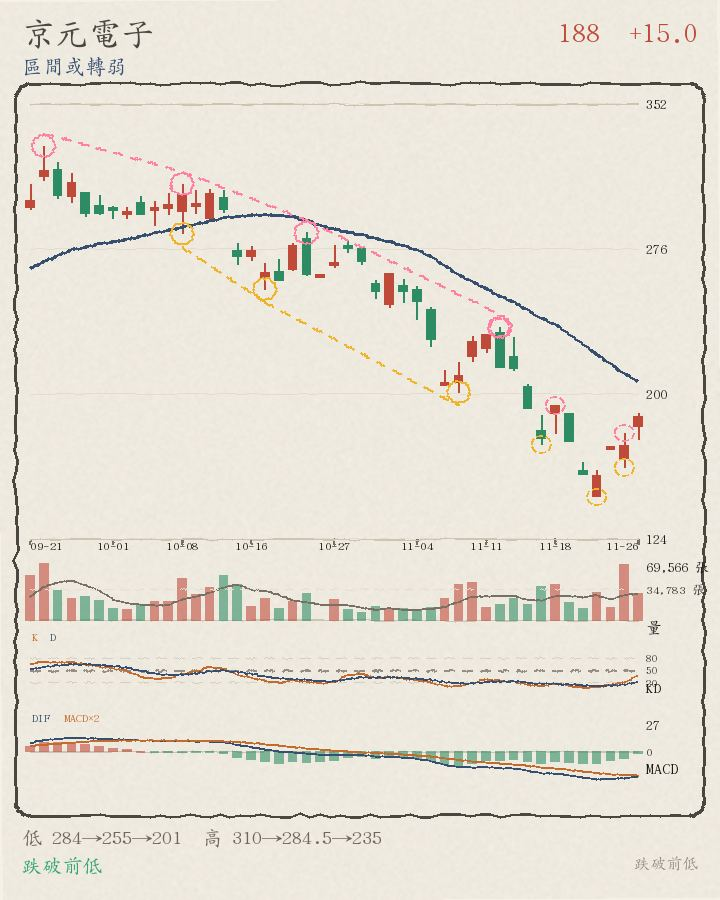
12:31 盤中 188（+8.67%），比加權指數強 5.58 個百分點、跌破月線 210.8，轉折還沒走出明顯方向。
- 月線位置：現價 188 在月線 210.8 之下（-10.8%）；5 日線 167 也在月線之下（短均在下）；月線向下
- 量能：以已過交易時間推估，今天成交量約是 20 日均量的 1.83 倍（爆量），比 20 日均量大不少；上漲又量增，量價配合
- 關鍵價位：前一交易日高點 179.5（高於 4.7%）；今天盤中高點 189.5（低於 0.8%）；今天盤中低點 176（高於 6.8%）
- 轉折結構：低點 284、255、201 與高點 310、284.5、235 都沒有明顯遞增，屬於區間震盪或轉弱；還沒確認的轉折低點 11-23 146、11-25 161.5；還沒確認的轉折高點 11-18 194、11-25 179.5（圖上虛線小圈）
大量 3167 上市
620 +22.0（+3.68%）
區間或轉弱 盤中成交值 57.36 億・全榜第 28 名（上市第 24 名）・相對大盤 +0.59
好條件 1/7：攻擊量（量增＋上漲）
不好條件 3/7：跌破前低、在月線之下、月線下彎
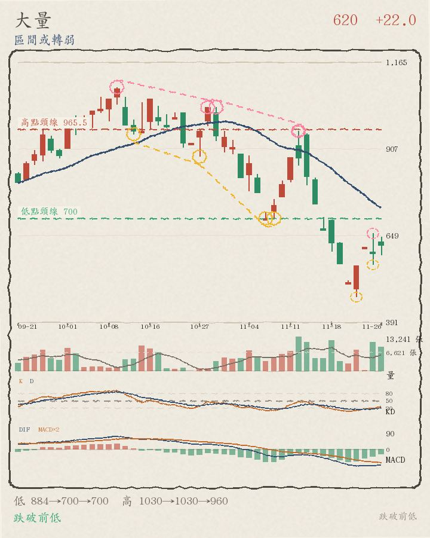
12:31 盤中 620（+3.68%），比加權指數強 0.59 個百分點、跌破月線 748.35，離高點頸線 965.5 還差 35.8%，轉折還沒走出明顯方向。
- 月線位置：現價 620 在月線 748.35 之下（-17.1%）；5 日線 569 也在月線之下（短均在下）；月線向下
- 量能：以已過交易時間推估，今天成交量約是 20 日均量的 2.07 倍（爆量），比 20 日均量大不少；上漲又量增，量價配合
- 關鍵價位：已跌破前一個轉折低點；高點頸線 965.5 還在現價上方 35.8%；前一交易日高點 655（低於 5.3%）；今天盤中高點 645（低於 3.9%）；今天盤中低點 592（高於 4.7%）
- 轉折結構：低點 884、700、700 與高點 1030、1030、960 都沒有明顯遞增，屬於區間震盪或轉弱；還沒確認的轉折低點 11-23 466、11-25 562；還沒確認的轉折高點 11-12 960、11-25 655（圖上虛線小圈）
中華電 2412 上市
168.5 +5.0（+3.06%）
高點墊高、底部不穩 盤中成交值 56.01 億・全榜第 29 名（上市第 25 名）・相對大盤 -0.03
好條件 5/7：站上月線、月線向上、頭頭高、攻擊量（量增＋上漲）、守住今日高檔（距今日高點 1% 內）
不好條件 1/7：相對大盤弱
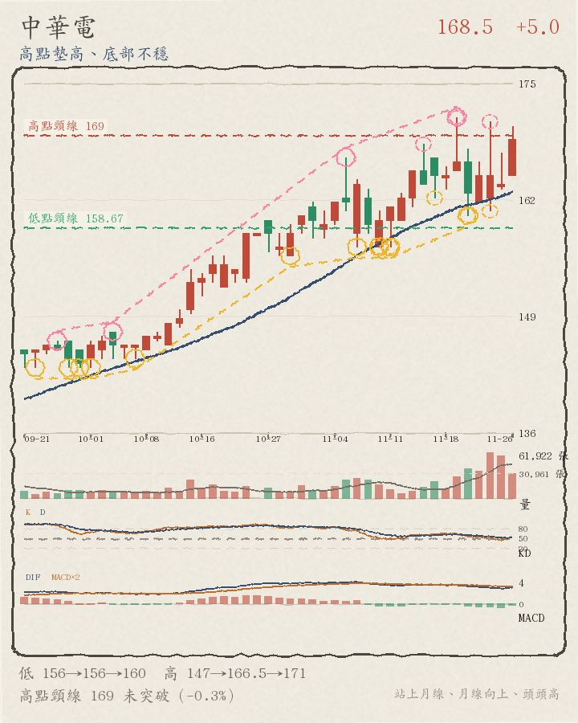
12:31 盤中 168.5（+3.06%），比加權指數弱 0.03 個百分點、站上月線 162.15，離高點頸線 169 還差 0.3%，高點還在墊高（但底部沒同步墊高）。
- 月線位置：現價 168.5 在月線 162.15 之上（+3.9%）；5 日線 164.2 也在月線之上（短均在上）；月線向上
- 量能：以已過交易時間推估，今天成交量約是 20 日均量的 2.10 倍（爆量），比 20 日均量大不少；上漲又量增，量價配合
- 關鍵價位：高點頸線 169 還沒突破，差 0.3%；前一交易日高點 167（高於 0.9%）；今天盤中高點 170（低於 0.9%）；今天盤中低點 164.5（高於 2.4%）
- 轉折結構：高點 147、166.5、171 墊高（頭頭高），但低點 156.5、156.5、160 沒有同步墊高；還沒確認的轉折低點 11-20 160、11-24 160.5；還沒確認的轉折高點 11-19 171、11-24 170.5（圖上虛線小圈）
緯穎 6669 上市
1570 +140.0（+9.79%）
區間或轉弱 盤中成交值 55.52 億・全榜第 30 名（上市第 26 名）・相對大盤 +6.70
好條件 2/7：突破頸線、攻擊量（量增＋上漲）
不好條件 2/7：在月線之下、月線下彎
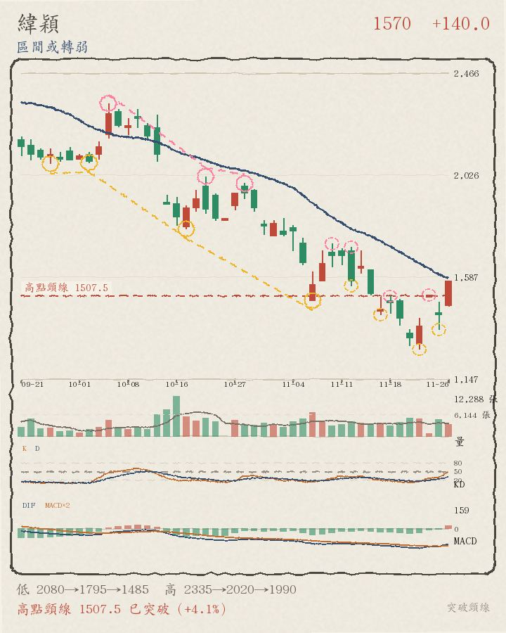
12:31 盤中 1570（+9.79%），比加權指數強 6.70 個百分點、跌破月線 1598.75，已突破高點頸線 1507.5，轉折還沒走出明顯方向。
- 月線位置：現價 1570 在月線 1598.75 之下（-1.8%）；5 日線 1410 也在月線之下（短均在下）；月線向下
- 量能：以已過交易時間推估，今天成交量約是 20 日均量的 1.13 倍（量增），比 20 日均量大一些；上漲又量增，量價配合
- 關鍵價位：高點頸線 1507.5 已站上；前一交易日高點 1480（高於 6.1%）；今天盤中高點 1570（高於 0.0%）；今天盤中低點 1460（高於 7.5%）
- 轉折結構：低點 2080、1795、1485 與高點 2335、2020、1990 都沒有明顯遞增，屬於區間震盪或轉弱；還沒確認的轉折低點 11-23 1275、11-25 1360；還沒確認的轉折高點 11-18 1505、11-24 1510（圖上虛線小圈）
玉晶光 3406 上市
764 +48.0（+6.70%）
區間或轉弱 盤中成交值 51.89 億・全榜第 31 名（上市第 27 名）・相對大盤 +3.61
好條件 1/7：攻擊量（量增＋上漲）
不好條件 2/7：在月線之下、月線下彎
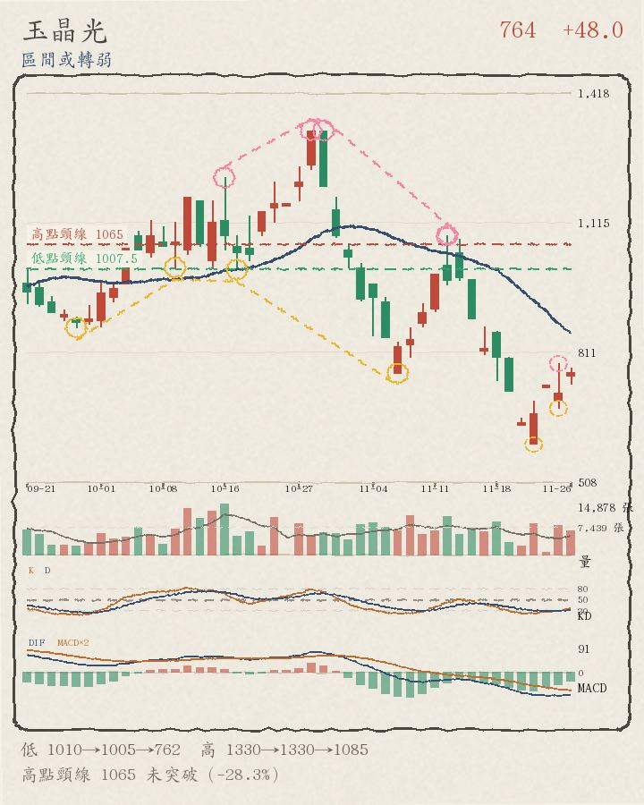
12:31 盤中 764（+6.70%），比加權指數強 3.61 個百分點、跌破月線 878.45，離高點頸線 1065 還差 28.3%，轉折還沒走出明顯方向。
- 月線位置：現價 764 在月線 878.45 之下（-13.0%）；5 日線 697.2 也在月線之下（短均在下）；月線向下
- 量能：以已過交易時間推估，今天成交量約是 20 日均量的 1.28 倍（量增），比 20 日均量大不少；上漲又量增，量價配合
- 關鍵價位：高點頸線 1065 還沒突破，差 28.3%；前一交易日高點 785（低於 2.7%）；今天盤中高點 775（低於 1.4%）；今天盤中低點 736（高於 3.8%）
- 轉折結構：低點 1010、1005、762 與高點 1330、1330、1085 都沒有明顯遞增，屬於區間震盪或轉弱；還沒確認的轉折低點 11-23 596、11-25 681；還沒確認的轉折高點 11-12 1085、11-25 785（圖上虛線小圈）
量增
↑ 回上方清單
臻鼎-KY 4958 上市
358.5 +30.0（+9.13%）
區間或轉弱 盤中成交值 50.7 億・全榜第 32 名（上市第 28 名）・相對大盤 +6.04
好條件 1/7：守住今日高檔（距今日高點 1% 內）
不好條件 2/7：在月線之下、月線下彎
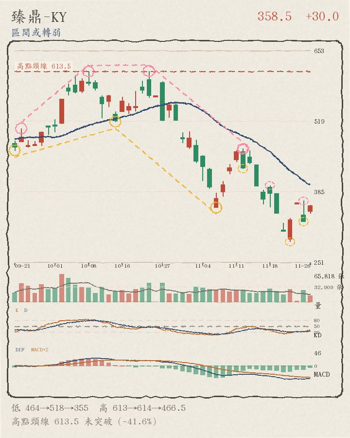
12:31 盤中 358.5（+9.13%），比加權指數強 6.04 個百分點、跌破月線 406.125，離高點頸線 613.5 還差 41.6%，轉折還沒走出明顯方向。
- 月線位置：現價 358.5 在月線 406.125 之下（-11.7%）；5 日線 335.7 也在月線之下（短均在下）；月線向下
- 量能：以已過交易時間推估，今天成交量約是 20 日均量的 0.75 倍（量平），比 20 日均量少很多；上漲但量縮，量價背離
- 關鍵價位：高點頸線 613.5 還沒突破，差 41.6%；前一交易日高點 367.5（低於 2.4%）；今天盤中高點 360（低於 0.4%）；今天盤中低點 343.5（高於 4.4%）
- 轉折結構：低點 463.5、518、355 與高點 613、614、466.5 都沒有明顯遞增，屬於區間震盪或轉弱；還沒確認的轉折低點 11-23 290、11-25 328.5；還沒確認的轉折高點 11-18 397、11-25 367.5（圖上虛線小圈）
量平
↑ 回上方清單
致茂 2360 上市
1105 +95.0（+9.41%）
區間或轉弱 盤中成交值 50.66 億・全榜第 33 名（上市第 29 名）・相對大盤 +6.32
好條件 2/7：攻擊量（量增＋上漲）、守住今日高檔（距今日高點 1% 內）
不好條件 3/7：跌破前低、在月線之下、月線下彎
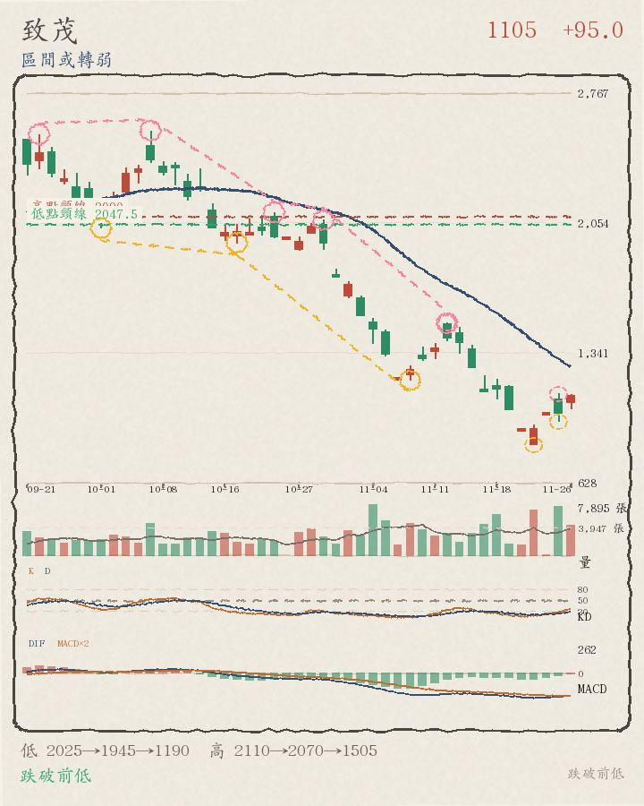
12:31 盤中 1105（+9.41%），比加權指數強 6.32 個百分點、跌破月線 1308.2，離高點頸線 2090 還差 47.1%，轉折還沒走出明顯方向。
- 月線位置：現價 1105 在月線 1308.2 之下（-15.5%）；5 日線 981.8 也在月線之下（短均在下）；月線向下
- 量能：以已過交易時間推估，今天成交量約是 20 日均量的 1.62 倍（爆量），比 20 日均量大不少；上漲又量增，量價配合
- 關鍵價位：已跌破前一個轉折低點；高點頸線 2090 還在現價上方 47.1%；前一交易日高點 1115（低於 0.9%）；今天盤中高點 1110（低於 0.5%）；今天盤中低點 1035（高於 6.8%）
- 轉折結構：低點 2025、1945、1190 與高點 2110、2070、1505 都沒有明顯遞增，屬於區間震盪或轉弱；還沒確認的轉折低點 11-23 835、11-25 963；還沒確認的轉折高點 11-12 1505、11-25 1115（圖上虛線小圈）
華邦電 2344 上市
103 +8.5（+8.99%）
區間或轉弱 盤中成交值 50.47 億・全榜第 34 名（上市第 30 名）・相對大盤 +5.90
好條件 1/7：守住今日高檔（距今日高點 1% 內）
不好條件 2/7：在月線之下、月線下彎
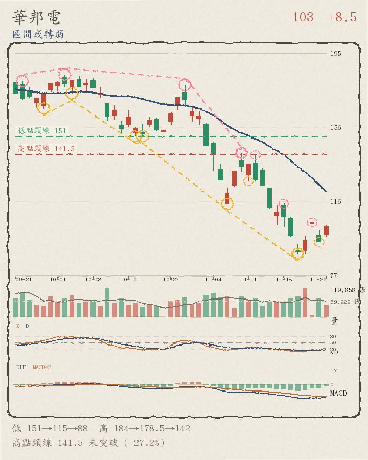
12:31 盤中 103（+8.99%），比加權指數強 5.90 個百分點、跌破月線 125.135，離高點頸線 141.5 還差 27.2%，轉折還沒走出明顯方向。
- 月線位置：現價 103 在月線 125.135 之下（-17.7%）；5 日線 96.44 也在月線之下（短均在下）；月線向下
- 量能：以已過交易時間推估，今天成交量約是 20 日均量的 0.90 倍（量平），比 20 日均量少一些
- 關鍵價位：高點頸線 141.5 還沒突破，差 27.2%；前一交易日高點 101（高於 2.0%）；今天盤中高點 103.5（低於 0.5%）；今天盤中低點 97.4（高於 5.7%）
- 轉折結構：低點 151、115、88.2 與高點 184、178.5、142 都沒有明顯遞增，屬於區間震盪或轉弱；還沒確認的轉折低點 11-20 88.2、11-25 94.5；還沒確認的轉折高點 11-18 115、11-24 105（圖上虛線小圈）
量平
↑ 回上方清單
富喬 1815 上櫃
108.5 +7.0（+6.90%）
區間或轉弱 盤中成交值 50.13 億・全榜第 35 名（上櫃第 5 名）・相對大盤 +3.81
好條件 0/7：無
不好條件 3/7：跌破前低、在月線之下、月線下彎
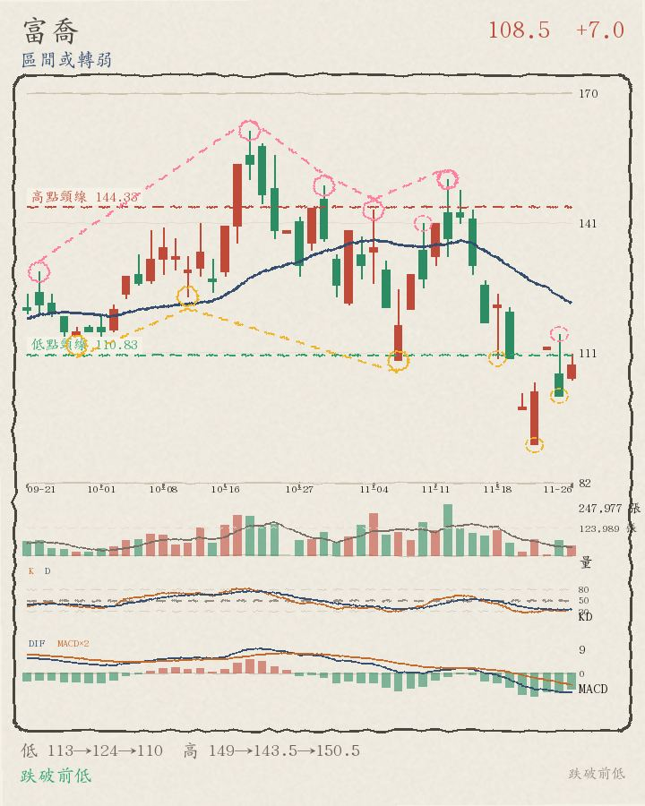
12:31 盤中 108.5（+6.90%），比加權指數強 3.81 個百分點、跌破月線 124.025，離高點頸線 144.33 還差 24.8%，轉折還沒走出明顯方向。
- 月線位置：現價 108.5 在月線 124.025 之下（-12.5%）；5 日線 105.1 也在月線之下（短均在下）；月線向下
- 量能：以已過交易時間推估，今天成交量約是 20 日均量的 0.56 倍（量縮），比 20 日均量少很多；上漲但量縮，量價背離
- 關鍵價位：已跌破前一個轉折低點；高點頸線 144.33 還在現價上方 24.8%；前一交易日高點 115.5（低於 6.1%）；今天盤中高點 111（低於 2.3%）；今天盤中低點 105（高於 3.3%）
- 轉折結構：低點 113、124、109.5 與高點 149、143.5、150.5 都沒有明顯遞增，屬於區間震盪或轉弱；還沒確認的轉折低點 11-23 90.4、11-25 101.5；還沒確認的轉折高點 11-12 150.5、11-25 115.5（圖上虛線小圈）
長榮 2603 上市
254 +1.5（+0.59%）
區間或轉弱 盤中成交值 43.65 億・全榜第 36 名（上市第 31 名）・相對大盤 -2.50
好條件 1/7：攻擊量（量增＋上漲）
不好條件 3/7：相對大盤弱、在月線之下、月線下彎
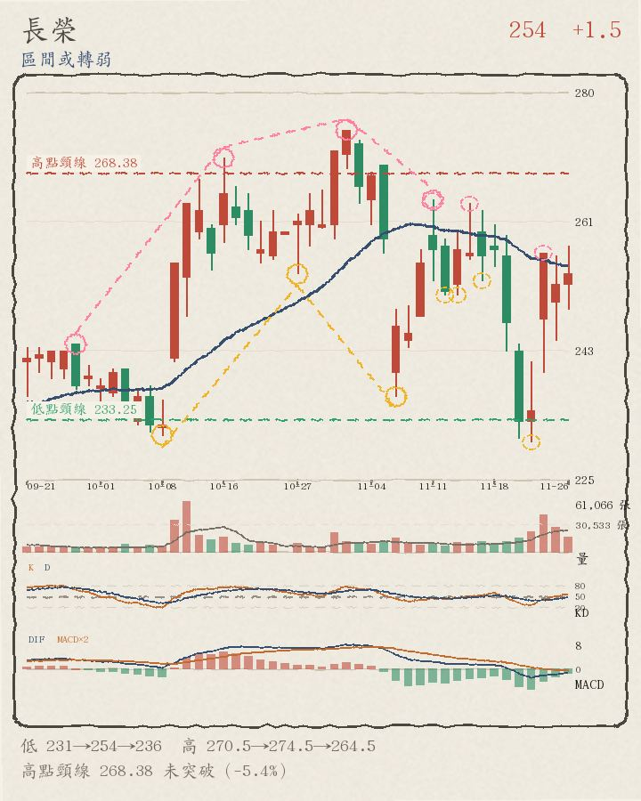
12:31 盤中 254（+0.59%），比加權指數弱 2.50 個百分點、跌破月線 255.475，離高點頸線 268.38 還差 5.4%，轉折還沒走出明顯方向。
- 月線位置：現價 254 在月線 255.475 之下（-0.6%）；5 日線 244.8 也在月線之下（短均在下）；月線向下
- 量能：以已過交易時間推估，今天成交量約是 20 日均量的 1.64 倍（爆量），比 20 日均量大不少；上漲又量增，量價配合
- 關鍵價位：高點頸線 268.38 還沒突破，差 5.4%；前一交易日高點 256.5（低於 1.0%）；今天盤中高點 258（低於 1.6%）；今天盤中低點 249（高於 2.0%）
- 轉折結構：低點 231、254、236.5 與高點 270.5、274.5、264.5 都沒有明顯遞增，屬於區間震盪或轉弱；還沒確認的轉折低點 11-17 253、11-23 230；還沒確認的轉折高點 11-16 264、11-24 257（圖上虛線小圈）
緯創 3231 上市
166.5 +14.5（+9.54%）
區間或轉弱 盤中成交值 41.5 億・全榜第 37 名（上市第 32 名）・相對大盤 +6.45
好條件 1/7：突破頸線
不好條件 2/7：在月線之下、月線下彎
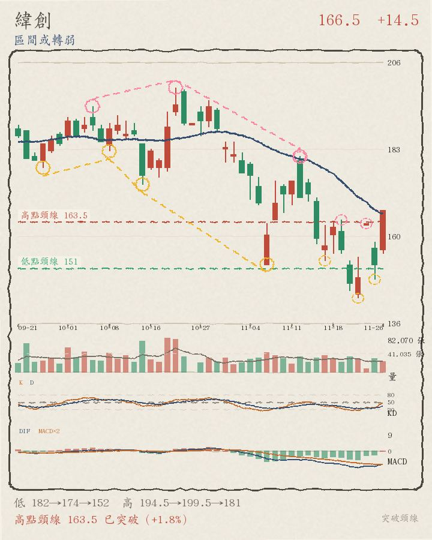
12:31 盤中 166.5（+9.54%），比加權指數強 6.45 個百分點、跌破月線 166.7，已突破高點頸線 163.5，轉折還沒走出明顯方向。
- 月線位置：現價 166.5 在月線 166.7 之下（-0.1%）；5 日線 153.3 也在月線之下（短均在下）；月線向下
- 量能：以已過交易時間推估，今天成交量約是 20 日均量的 1.06 倍（量平），比 20 日均量大一些
- 關鍵價位：高點頸線 163.5 已站上；前一交易日高點 158（高於 5.4%）；今天盤中高點 166.5（高於 0.0%）；今天盤中低點 155（高於 7.4%）
- 轉折結構：低點 182.5、173.5、152 與高點 194.5、199.5、181 都沒有明顯遞增，屬於區間震盪或轉弱；還沒確認的轉折低點 11-23 143、11-25 148；還沒確認的轉折高點 11-19 164、11-24 163（圖上虛線小圈）
旺矽 6223 上櫃
4125 +355.0（+9.42%）
區間或轉弱 盤中成交值 40.63 億・全榜第 38 名（上櫃第 6 名）・相對大盤 +6.33
好條件 2/7：攻擊量（量增＋上漲）、守住今日高檔（距今日高點 1% 內）
不好條件 2/7：在月線之下、月線下彎
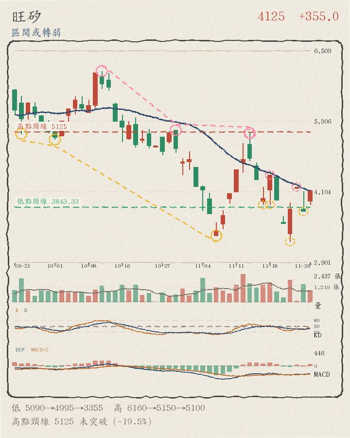
12:31 盤中 4125（+9.42%），比加權指數強 6.33 個百分點、跌破月線 4157.5，離高點頸線 5125 還差 19.5%，轉折還沒走出明顯方向。
- 月線位置：現價 4125 在月線 4157.5 之下（-0.8%）；5 日線 3855 也在月線之下（短均在下）；月線向下
- 量能：以已過交易時間推估，今天成交量約是 20 日均量的 1.12 倍（量增），比 20 日均量大一些；上漲又量增，量價配合
- 關鍵價位：高點頸線 5125 還沒突破，差 19.5%；前一交易日高點 4105（高於 0.5%）；今天盤中高點 4135（低於 0.2%）；今天盤中低點 3885（高於 6.2%）
- 轉折結構：低點 5090、4995、3355 與高點 6160、5150、5100 都沒有明顯遞增，屬於區間震盪或轉弱；還沒確認的轉折低點 11-23 3250、11-25 3770；還沒確認的轉折高點 11-18 4390、11-24 4185（圖上虛線小圈）
量增
↑ 回上方清單
廣達 2382 上市
284 +23.0（+8.81%）
區間或轉弱 盤中成交值 40.15 億・全榜第 39 名（上市第 33 名）・相對大盤 +5.72
好條件 0/7：無
不好條件 2/7：在月線之下、月線下彎
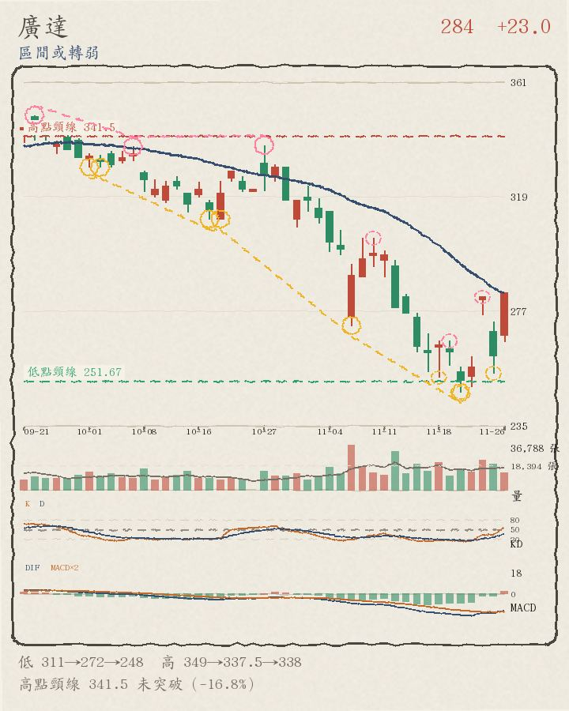
12:31 盤中 284（+8.81%），比加權指數強 5.72 個百分點、跌破月線 285.675，離高點頸線 341.5 還差 16.8%，轉折還沒走出明顯方向。
- 月線位置：現價 284 在月線 285.675 之下（-0.6%）；5 日線 263 也在月線之下（短均在下）；月線向下
- 量能：以已過交易時間推估，今天成交量約是 20 日均量的 1.07 倍（量平），比 20 日均量大一些
- 關鍵價位：高點頸線 341.5 還沒突破，差 16.8%；前一交易日高點 273.5（高於 3.8%）；今天盤中高點 284（高於 0.0%）；今天盤中低點 266（高於 6.8%）
- 轉折結構：低點 311、272、247.5 與高點 349、337.5、338 都沒有明顯遞增，屬於區間震盪或轉弱；還沒確認的轉折低點 11-20 247.5、11-25 254.5；還沒確認的轉折高點 11-19 266.5、11-24 282.5（圖上虛線小圈）
量平
↑ 回上方清單
力積電 6770 上市
51.9 +3.9（+8.13%）
區間或轉弱 盤中成交值 39.65 億・全榜第 40 名（上市第 34 名）・相對大盤 +5.04
好條件 0/7：無
不好條件 2/7：在月線之下、月線下彎
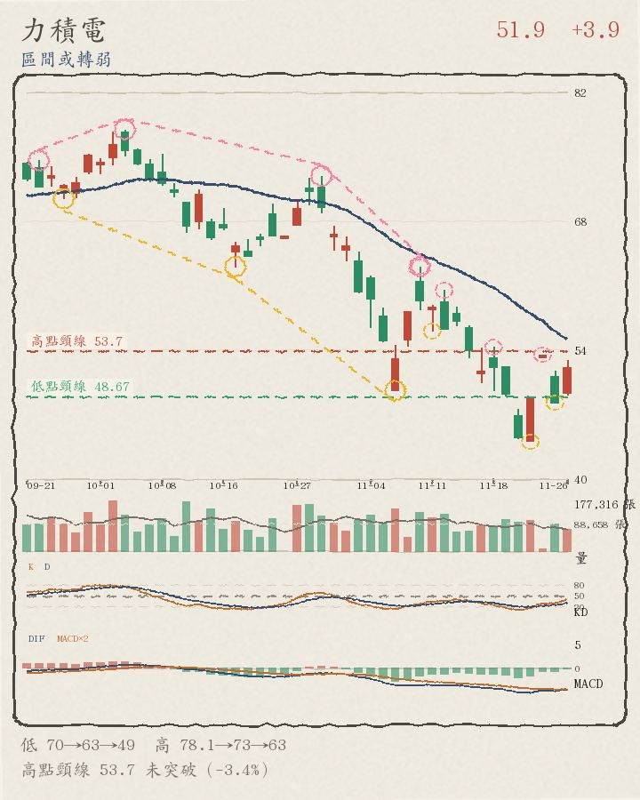
12:31 盤中 51.9（+8.13%），比加權指數強 5.04 個百分點、跌破月線 55.875，離高點頸線 53.7 還差 3.4%，轉折還沒走出明顯方向。
- 月線位置：現價 51.9 在月線 55.875 之下（-7.1%）；5 日線 48.56 也在月線之下（短均在下）；月線向下
- 量能：以已過交易時間推估，今天成交量約是 20 日均量的 0.98 倍（量平），跟 20 日均量差不多
- 關鍵價位：高點頸線 53.7 還沒突破，差 3.4%；前一交易日高點 51.5（高於 0.8%）；今天盤中高點 52.7（低於 1.5%）；今天盤中低點 48.8（高於 6.4%）
- 轉折結構：低點 70.5、63、49.35 與高點 78.1、73、63 都沒有明顯遞增，屬於區間震盪或轉弱；還沒確認的轉折低點 11-23 43.7、11-25 48；還沒確認的轉折高點 11-18 54.1、11-24 53.3（圖上虛線小圈）
量平
↑ 回上方清單
國泰金 2882 上市
102.5 +2.0（+1.99%）
區間或轉弱 盤中成交值 38.02 億・全榜第 41 名（上市第 35 名）・相對大盤 -1.10
好條件 1/7：攻擊量（量增＋上漲）
不好條件 3/7：相對大盤弱、在月線之下、月線下彎
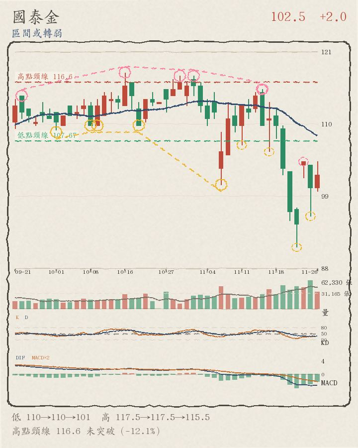
12:31 盤中 102.5（+1.99%），比加權指數弱 1.10 個百分點、跌破月線 109.12，離高點頸線 116.6 還差 12.1%，轉折還沒走出明顯方向。
- 月線位置：現價 102.5 在月線 109.12 之下（-6.1%）；5 日線 100.08 也在月線之下（短均在下）；月線向下
- 量能：以已過交易時間推估，今天成交量約是 20 日均量的 1.51 倍（爆量），比 20 日均量大不少；上漲又量增，量價配合
- 關鍵價位：高點頸線 116.6 還沒突破，差 12.1%；前一交易日高點 104（低於 1.4%）；今天盤中高點 104.5（低於 1.9%）；今天盤中低點 100（高於 2.5%）
- 轉折結構：低點 110、110、101 與高點 117.5、117.5、115.5 都沒有明顯遞增，屬於區間震盪或轉弱；還沒確認的轉折低點 11-23 91.5、11-25 96.2；還沒確認的轉折高點 11-16 115.5、11-24 104.5（圖上虛線小圈）
川湖 2059 上市
7155 +650.0（+9.99%）
區間或轉弱 盤中成交值 36.99 億・全榜第 42 名（上市第 36 名）・相對大盤 +6.90
好條件 0/7：無
不好條件 3/7：跌破前低、在月線之下、月線下彎
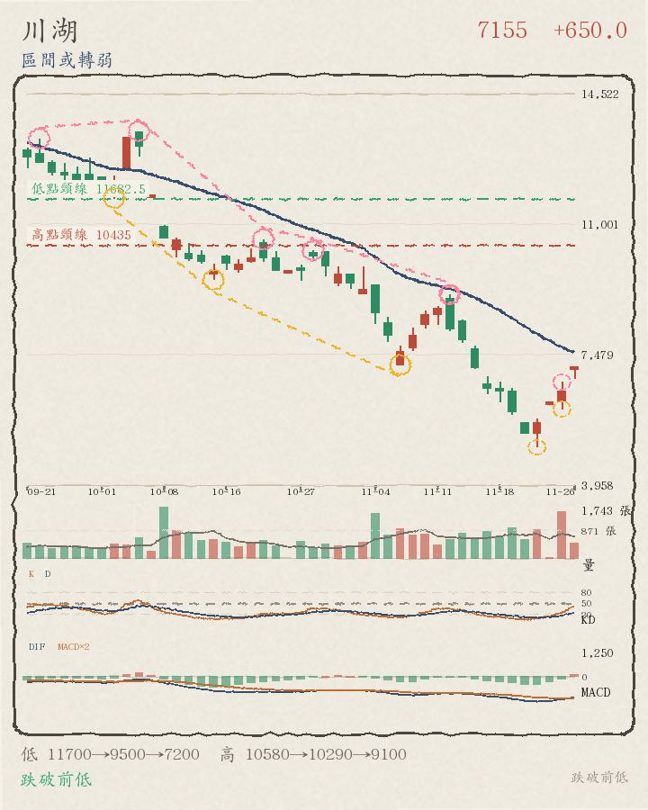
12:31 盤中 7155（+9.99%），比加權指數強 6.90 個百分點、跌破月線 7677.25，離高點頸線 10435 還差 31.4%，轉折還沒走出明顯方向。
- 月線位置：現價 7155 在月線 7677.25 之下（-6.8%）；5 日線 5927 也在月線之下（短均在下）；月線向下
- 量能：以已過交易時間推估，今天成交量約是 20 日均量的 0.96 倍（量平），跟 20 日均量差不多
- 關鍵價位：已跌破前一個轉折低點；高點頸線 10435 還在現價上方 31.4%；前一交易日高點 6740（高於 6.2%）；今天盤中高點 7155（高於 0.0%）；今天盤中低點 6840（高於 4.6%）
- 轉折結構：低點 11700、9500、7200 與高點 10580、10290、9100 都沒有明顯遞增，屬於區間震盪或轉弱；還沒確認的轉折低點 11-23 4980、11-25 6015；還沒確認的轉折高點 11-12 9100、11-25 6740（圖上虛線小圈）
信驊 5274 上櫃
9500 +705.0（+8.02%）
區間或轉弱 盤中成交值 35.91 億・全榜第 43 名（上櫃第 7 名）・相對大盤 +4.93
好條件 1/7：守住今日高檔（距今日高點 1% 內）
不好條件 3/7：跌破前低、在月線之下、月線下彎
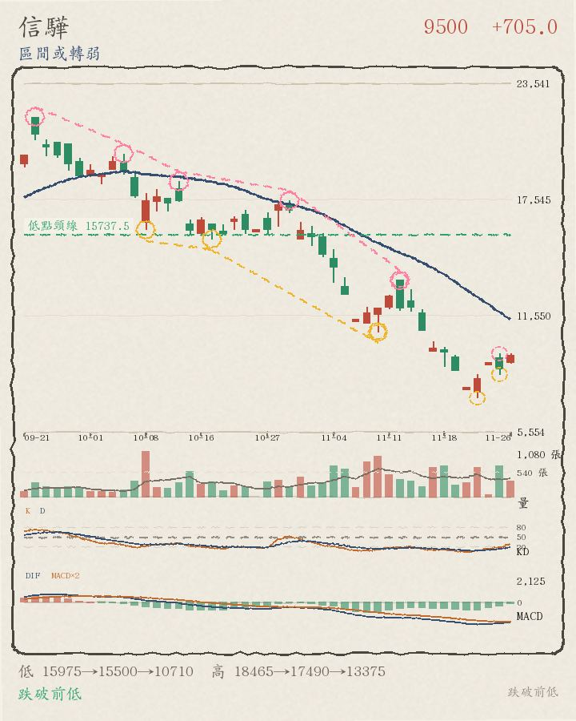
12:31 盤中 9500（+8.02%），比加權指數強 4.93 個百分點、跌破月線 11735.2，轉折還沒走出明顯方向。
- 月線位置：現價 9500 在月線 11735.2 之下（-19.1%）；5 日線 8567 也在月線之下（短均在下）；月線向下
- 量能：以已過交易時間推估，今天成交量約是 20 日均量的 1.04 倍（量平），跟 20 日均量差不多
- 關鍵價位：前一交易日高點 9590（低於 0.9%）；今天盤中高點 9570（低於 0.7%）；今天盤中低點 9080（高於 4.6%）
- 轉折結構：低點 15975、15500、10710 與高點 18465、17490、13375 都沒有明顯遞增，屬於區間震盪或轉弱；還沒確認的轉折低點 11-23 7295、11-25 8500；還沒確認的轉折高點 11-12 13375、11-25 9590（圖上虛線小圈）
雙鴻 3324 上櫃
855 +57.0（+7.14%）
區間或轉弱 盤中成交值 35.48 億・全榜第 44 名（上櫃第 8 名）・相對大盤 +4.05
好條件 1/7：攻擊量（量增＋上漲）
不好條件 3/7：跌破前低、在月線之下、月線下彎
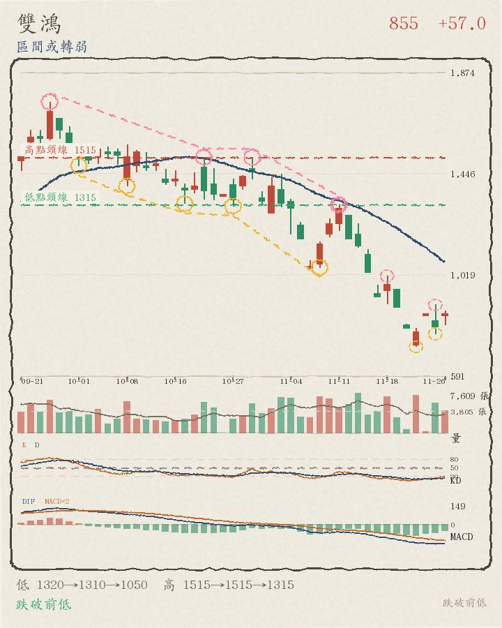
12:31 盤中 855（+7.14%），比加權指數強 4.05 個百分點、跌破月線 1103.55，離高點頸線 1515 還差 43.6%，轉折還沒走出明顯方向。
- 月線位置：現價 855 在月線 1103.55 之下（-22.5%）；5 日線 821 也在月線之下（短均在下）；月線向下
- 量能：以已過交易時間推估，今天成交量約是 20 日均量的 1.15 倍（量增），比 20 日均量大不少；上漲又量增，量價配合
- 關鍵價位：已跌破前一個轉折低點；高點頸線 1515 還在現價上方 43.6%；前一交易日高點 892（低於 4.1%）；今天盤中高點 867（低於 1.4%）；今天盤中低點 808（高於 5.8%）
- 轉折結構：低點 1320、1310、1050 與高點 1515、1515、1315 都沒有明顯遞增，屬於區間震盪或轉弱；還沒確認的轉折低點 11-23 715、11-25 769；還沒確認的轉折高點 11-18 1015、11-25 892（圖上虛線小圈）
鴻勁 7769 上市
3160 +95.0（+3.10%）
區間或轉弱 盤中成交值 34.06 億・全榜第 45 名（上市第 37 名）・相對大盤 +0.01
好條件 1/7：攻擊量（量增＋上漲）
不好條件 3/7：跌破前低、在月線之下、月線下彎
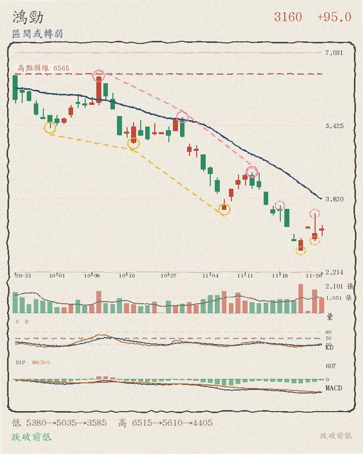
12:31 盤中 3160（+3.10%），比加權指數強 0.01 個百分點、跌破月線 3918.5，離高點頸線 6565 還差 51.9%，轉折還沒走出明顯方向。
- 月線位置：現價 3160 在月線 3918.5 之下（-19.4%）；5 日線 3055 也在月線之下（短均在下）；月線向下
- 量能：以已過交易時間推估，今天成交量約是 20 日均量的 1.48 倍（量增），比 20 日均量大不少；上漲又量增，量價配合
- 關鍵價位：已跌破前一個轉折低點；高點頸線 6565 還在現價上方 51.9%；前一交易日高點 3495（低於 9.6%）；今天盤中高點 3240（低於 2.5%）；今天盤中低點 3010（高於 5.0%）
- 轉折結構：低點 5380、5035、3585 與高點 6515、5610、4405 都沒有明顯遞增，屬於區間震盪或轉弱；還沒確認的轉折低點 11-23 2680、11-25 2900；還沒確認的轉折高點 11-18 3670、11-25 3495（圖上虛線小圈）
環球晶 6488 上櫃
524 +47.0（+9.85%）
區間或轉弱 盤中成交值 32.47 億・全榜第 46 名（上櫃第 9 名）・相對大盤 +6.76
好條件 0/7：無
不好條件 2/7：在月線之下、月線下彎
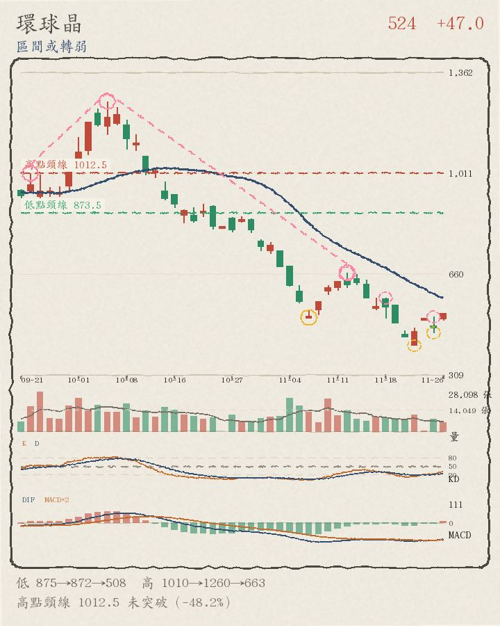
12:31 盤中 524（+9.85%），比加權指數強 6.76 個百分點、跌破月線 590.7，離高點頸線 1012.5 還差 48.2%，轉折還沒走出明顯方向。
- 月線位置：現價 524 在月線 590.7 之下（-11.3%）；5 日線 475 也在月線之下（短均在下）；月線向下
- 量能：以已過交易時間推估，今天成交量約是 20 日均量的 0.72 倍（量平），比 20 日均量少很多；上漲但量縮，量價背離
- 關鍵價位：高點頸線 1012.5 還沒突破，差 48.2%；前一交易日高點 510（高於 2.7%）；今天盤中高點 524（高於 0.0%）；今天盤中低點 498.5（高於 5.1%）
- 轉折結構：低點 875、872、508 與高點 1010、1260、663 都沒有明顯遞增，屬於區間震盪或轉弱；還沒確認的轉折低點 11-23 410.5、11-25 455.5；還沒確認的轉折高點 11-18 577、11-25 510（圖上虛線小圈）
量平
↑ 回上方清單
定穎投控 3715 上市
140.5 +8.5（+6.44%）
高點墊高、底部不穩 盤中成交值 31.36 億・全榜第 47 名（上市第 38 名）・相對大盤 +3.35
好條件 3/7：站上月線、頭頭高、攻擊量（量增＋上漲）
不好條件 1/7：月線下彎
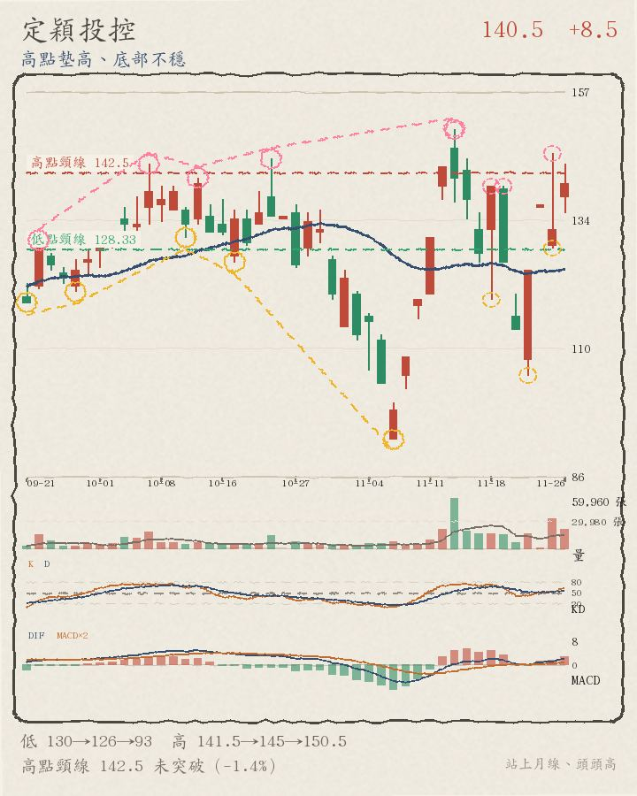
12:31 盤中 140.5（+6.44%），比加權指數強 3.35 個百分點、站上月線 124.26，離高點頸線 142.5 還差 1.4%，高點還在墊高（但底部沒同步墊高）。
- 月線位置：現價 140.5 在月線 124.26 之上（+13.1%）；5 日線 126.5 也在月線之上（短均在上）；月線向下
- 量能：以已過交易時間推估，今天成交量約是 20 日均量的 2.43 倍（爆量），比 20 日均量大不少；上漲又量增，量價配合
- 關鍵價位：高點頸線 142.5 還沒突破，差 1.4%；前一交易日高點 146（低於 3.8%）；今天盤中高點 144（低於 2.4%）；今天盤中低點 135（高於 4.1%）
- 轉折結構：高點 141.5、145、150.5 墊高（頭頭高），但低點 130.5、126、93.2 沒有同步墊高；還沒確認的轉折低點 11-23 105、11-25 128.5；還沒確認的轉折高點 11-19 140、11-25 146（圖上虛線小圈）
光寶科 2301 上市
202 +13.0（+6.88%）
區間或轉弱 盤中成交值 30.15 億・全榜第 48 名（上市第 39 名）・相對大盤 +3.79
好條件 2/7：攻擊量（量增＋上漲）、守住今日高檔（距今日高點 1% 內）
不好條件 2/7：在月線之下、月線下彎
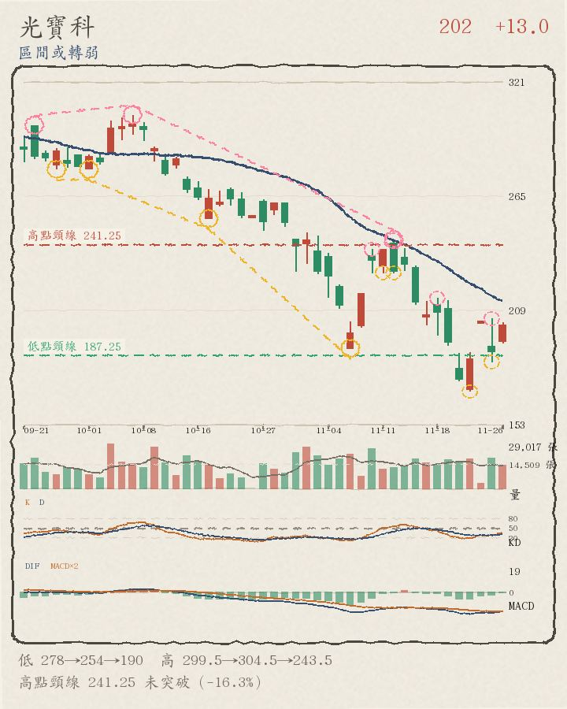
12:31 盤中 202（+6.88%），比加權指數強 3.79 個百分點、跌破月線 216.225，離高點頸線 241.25 還差 16.3%，轉折還沒走出明顯方向。
- 月線位置：現價 202 在月線 216.225 之下（-6.6%）；5 日線 189.5 也在月線之下（短均在下）；月線向下
- 量能：以已過交易時間推估，今天成交量約是 20 日均量的 1.15 倍（量增），比 20 日均量大不少；上漲又量增，量價配合
- 關鍵價位：高點頸線 241.25 還沒突破，差 16.3%；前一交易日高點 205（低於 1.5%）；今天盤中高點 203（低於 0.5%）；今天盤中低點 193（高於 4.7%）
- 轉折結構：低點 278、254、190.5 與高點 299.5、304.5、243.5 都沒有明顯遞增，屬於區間震盪或轉弱；還沒確認的轉折低點 11-23 169.5、11-25 184；還沒確認的轉折高點 11-18 215、11-25 205（圖上虛線小圈）
量增
↑ 回上方清單
華新科 2492 上市
210 +19.0（+9.95%）
區間或轉弱 盤中成交值 29.72 億・全榜第 49 名（上市第 40 名）・相對大盤 +6.86
好條件 0/7：無
不好條件 3/7：跌破前低、在月線之下、月線下彎
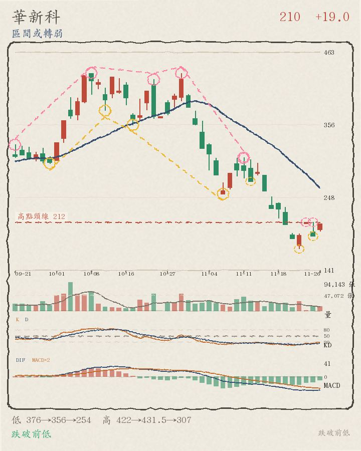
12:31 盤中 210（+9.95%），比加權指數強 6.86 個百分點、跌破月線 273.15，離高點頸線 212 還差 0.9%，轉折還沒走出明顯方向。
- 月線位置：現價 210 在月線 273.15 之下（-23.1%）；5 日線 198.3 也在月線之下（短均在下）；月線向下
- 量能：以已過交易時間推估，今天成交量約是 20 日均量的 0.69 倍（量縮），比 20 日均量少很多；上漲但量縮，量價背離
- 關鍵價位：已跌破前一個轉折低點；高點頸線 212 還在現價上方 0.9%；前一交易日高點 212（低於 0.9%）；今天盤中高點 210（高於 0.0%）；今天盤中低點 198.5（高於 5.8%）
- 轉折結構：低點 376.5、355.5、253.5 與高點 422、431.5、307 都沒有明顯遞增，屬於區間震盪或轉弱；還沒確認的轉折低點 11-23 172.5、11-25 191；還沒確認的轉折高點 11-24 212、11-25 212（圖上虛線小圈）
大立光 3008 上市
4425 +400.0（+9.94%）
區間或轉弱 盤中成交值 29.51 億・全榜第 50 名（上市第 41 名）・相對大盤 +6.85
好條件 0/7：無
不好條件 2/7：在月線之下、月線下彎
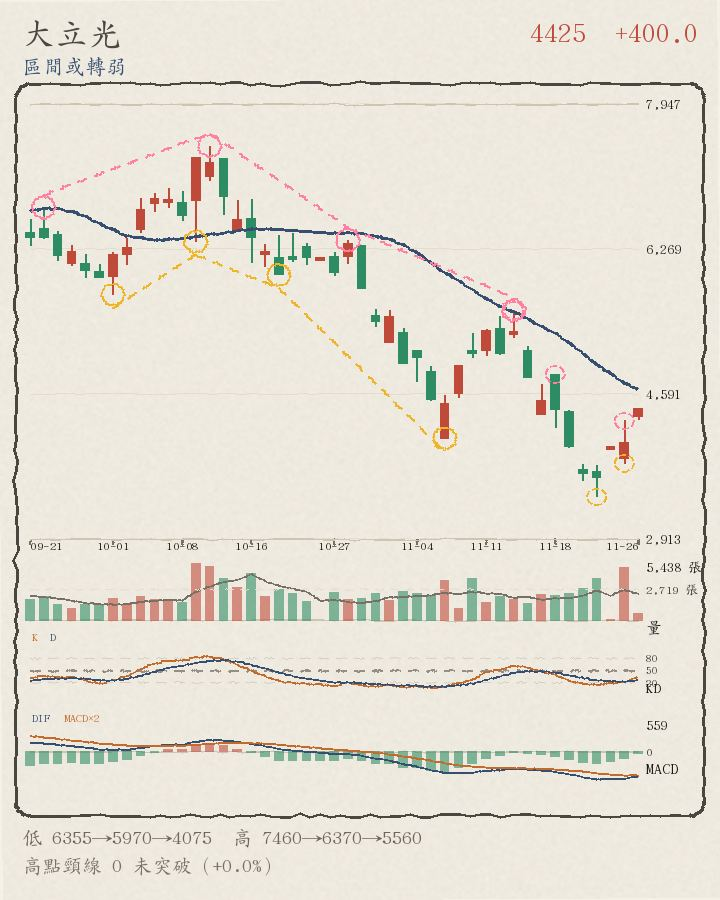
12:31 盤中 4425（+9.94%），比加權指數強 6.85 個百分點、跌破月線 4717.75，轉折還沒走出明顯方向。
- 月線位置：現價 4425 在月線 4717.75 之下（-6.2%）；5 日線 3855 也在月線之下（短均在下）；月線向下
- 量能：以已過交易時間推估，今天成交量約是 20 日均量的 0.37 倍（量縮），比 20 日均量少很多；上漲但量縮，量價背離
- 關鍵價位：前一交易日高點 4280（高於 3.4%）；今天盤中高點 4425（高於 0.0%）；今天盤中低點 4300（高於 2.9%）
- 轉折結構：低點 6355、5970、4075 與高點 7460、6370、5560 都沒有明顯遞增，屬於區間震盪或轉弱；還沒確認的轉折低點 11-23 3400、11-25 3790；還沒確認的轉折高點 11-18 4820、11-25 4280（圖上虛線小圈）
量縮
↑ 回上方清單
友達 2409 上市
26 +1.9（+7.66%）
區間或轉弱 盤中成交值 29.48 億・全榜第 51 名（上市第 42 名）・相對大盤 +4.57
好條件 1/7：守住今日高檔（距今日高點 1% 內）
不好條件 2/7：在月線之下、月線下彎

12:31 盤中 26（+7.66%），比加權指數強 4.57 個百分點、跌破月線 27.865，離高點頸線 26.5 還差 1.9%，轉折還沒走出明顯方向。
- 月線位置：現價 26 在月線 27.865 之下（-6.7%）；5 日線 24.62 也在月線之下（短均在下）；月線向下
- 量能：以已過交易時間推估，今天成交量約是 20 日均量的 0.62 倍（量縮），比 20 日均量少很多；上漲但量縮，量價背離
- 關鍵價位：高點頸線 26.5 還沒突破，差 1.9%；前一交易日高點 26.5（低於 1.9%）；今天盤中高點 26.05（低於 0.2%）；今天盤中低點 24.7（高於 5.3%）
- 轉折結構：低點 34.45、24.55、22.7 與高點 37.8、36.65、31.5 都沒有明顯遞增，屬於區間震盪或轉弱；還沒確認的轉折低點 11-23 22.7、11-25 23.85；還沒確認的轉折高點 11-24 26.5、11-25 26.5（圖上虛線小圈）
量縮
↑ 回上方清單
永豐金 2890 上市
36.35 +0.0（+0.00%）
區間或轉弱 盤中成交值 26.41 億・全榜第 52 名（上市第 43 名）・相對大盤 -3.09
好條件 0/7：無
不好條件 4/7：跌破前低、相對大盤弱、在月線之下、月線下彎
12:31 盤中 36.35（+0.00%），比加權指數弱 3.09 個百分點、跌破月線 41.912，離高點頸線 46.38 還差 21.6%，轉折還沒走出明顯方向。
- 月線位置：現價 36.35 在月線 41.912 之下（-13.3%）；5 日線 37.7 也在月線之下（短均在下）；月線向下
- 量能：以已過交易時間推估，今天成交量約是 20 日均量的 2.54 倍（爆量），比 20 日均量大不少
- 關鍵價位：已跌破前一個轉折低點；高點頸線 46.38 還在現價上方 21.6%；前一交易日高點 39.35（低於 7.6%）；今天盤中高點 36.9（低於 1.5%）；今天盤中低點 35.2（高於 3.3%）
- 轉折結構：低點 42.7248、43.8、38.9 與高點 46.15、47.5、44.45 都沒有明顯遞增，屬於區間震盪或轉弱；還沒確認的轉折低點 11-23 34.5、11-25 36.35；還沒確認的轉折高點 11-16 44.45、11-24 40.35（圖上虛線小圈）
騰輝電子-KY 6672 上市
398.5 +36.0（+9.93%）
區間或轉弱 盤中成交值 26.05 億・全榜第 53 名（上市第 44 名）・相對大盤 +6.84
好條件 0/7：無
不好條件 3/7：跌破前低、在月線之下、月線下彎
12:31 盤中 398.5（+9.93%），比加權指數強 6.84 個百分點、跌破月線 461.275，離高點頸線 547 還差 27.1%，轉折還沒走出明顯方向。
- 月線位置：現價 398.5 在月線 461.275 之下（-13.6%）；5 日線 365.5 也在月線之下（短均在下）；月線向下
- 量能：以已過交易時間推估，今天成交量約是 20 日均量的 0.88 倍（量平），比 20 日均量少一些
- 關鍵價位：已跌破前一個轉折低點；高點頸線 547 還在現價上方 27.1%；前一交易日高點 409（低於 2.6%）；今天盤中高點 398.5（高於 0.0%）；今天盤中低點 380（高於 4.9%）
- 轉折結構：低點 285、532、429 與高點 677、552、577 都沒有明顯遞增，屬於區間震盪或轉弱；還沒確認的轉折低點 11-23 317.5、11-25 356.5；還沒確認的轉折高點 11-12 577、11-25 409（圖上虛線小圈）
健鼎 3044 上市
497 +45.0（+9.96%）
區間或轉弱 盤中成交值 25.98 億・全榜第 54 名（上市第 45 名）・相對大盤 +6.87
好條件 3/7：站上月線、突破頸線、攻擊量（量增＋上漲）
不好條件 1/7：月線下彎
12:31 盤中 497（+9.96%），比加權指數強 6.87 個百分點、站上月線 476，已突破高點頸線 484，轉折還沒走出明顯方向。
- 月線位置：現價 497 在月線 476 之上（+4.4%）；5 日線 443.4 也在月線之下（短均在下）；月線向下
- 量能：以已過交易時間推估，今天成交量約是 20 日均量的 1.41 倍（量增），比 20 日均量大不少；上漲又量增，量價配合
- 關鍵價位：高點頸線 484 已站上；前一交易日高點 479（高於 3.8%）；今天盤中高點 497（高於 0.0%）；今天盤中低點 476（高於 4.4%）
- 轉折結構：低點 554、554、395 與高點 597、563、582 都沒有明顯遞增，屬於區間震盪或轉弱；還沒確認的轉折低點 11-23 397.5、11-25 438；還沒確認的轉折高點 11-18 481.5、11-24 486.5（圖上虛線小圈）
群創 3481 上市
33.25 +2.7（+8.84%）
區間或轉弱 盤中成交值 25.71 億・全榜第 55 名（上市第 46 名）・相對大盤 +5.75
好條件 0/7：無
不好條件 3/7：跌破前低、在月線之下、月線下彎
12:31 盤中 33.25（+8.84%），比加權指數強 5.75 個百分點、跌破月線 37.63，轉折還沒走出明顯方向。
- 月線位置：現價 33.25 在月線 37.63 之下（-11.6%）；5 日線 31.39 也在月線之下（短均在下）；月線向下
- 量能：以已過交易時間推估，今天成交量約是 20 日均量的 0.65 倍（量縮），比 20 日均量少很多；上漲但量縮，量價背離
- 關鍵價位：前一交易日高點 32.7（高於 1.7%）；今天盤中高點 33.25（高於 0.0%）；今天盤中低點 31.35（高於 6.1%）
- 轉折結構：低點 48.55、45.65、34.2 與高點 56.2、49.7、43.3 都沒有明顯遞增，屬於區間震盪或轉弱；還沒確認的轉折低點 11-23 28.95、11-25 29.95；還沒確認的轉折高點 11-18 37、11-24 33.25（圖上虛線小圈）
旺宏 2337 上市
65.8 +4.6（+7.52%）
區間或轉弱 盤中成交值 25.42 億・全榜第 56 名（上市第 47 名）・相對大盤 +4.43
好條件 0/7：無
不好條件 3/7：跌破前低、在月線之下、月線下彎
12:31 盤中 65.8（+7.52%），比加權指數強 4.43 個百分點、跌破月線 77.855，離高點頸線 86.7 還差 24.1%，轉折還沒走出明顯方向。
- 月線位置：現價 65.8 在月線 77.855 之下（-15.5%）；5 日線 62.92 也在月線之下（短均在下）；月線向下
- 量能：以已過交易時間推估，今天成交量約是 20 日均量的 1.00 倍（量平），跟 20 日均量差不多
- 關鍵價位：已跌破前一個轉折低點；高點頸線 86.7 還在現價上方 24.1%；前一交易日高點 66.1（低於 0.5%）；今天盤中高點 67.1（低於 1.9%）；今天盤中低點 61.2（高於 7.5%）
- 轉折結構：低點 114.5、99.2、71.8 與高點 123、107.5、88.2 都沒有明顯遞增，屬於區間震盪或轉弱；還沒確認的轉折低點 11-23 57.4、11-25 61.2；還沒確認的轉折高點 11-18 74.8、11-24 68（圖上虛線小圈）
晶豪科 3006 上市
185 +13.5（+7.87%）
區間或轉弱 盤中成交值 25.3 億・全榜第 57 名（上市第 48 名）・相對大盤 +4.78
好條件 0/7：無
不好條件 3/7：跌破前低、在月線之下、月線下彎
12:31 盤中 185（+7.87%），比加權指數強 4.78 個百分點、跌破月線 220.95，離高點頸線 243.75 還差 24.1%，轉折還沒走出明顯方向。
- 月線位置：現價 185 在月線 220.95 之下（-16.3%）；5 日線 182.9 也在月線之下（短均在下）；月線向下
- 量能：以已過交易時間推估，今天成交量約是 20 日均量的 0.99 倍（量平），跟 20 日均量差不多
- 關鍵價位：已跌破前一個轉折低點；高點頸線 243.75 還在現價上方 24.1%；前一交易日高點 180.5（高於 2.5%）；今天盤中高點 188（低於 1.6%）；今天盤中低點 173.5（高於 6.6%）
- 轉折結構：低點 265.5、226.5、193 與高點 290、291.5、247.5 都沒有明顯遞增，屬於區間震盪或轉弱；還沒確認的轉折低點 11-23 173、11-25 165.5；還沒確認的轉折高點 11-18 226、11-24 210.5（圖上虛線小圈）
兆豐金 2886 上市
49.1 -0.6（-1.21%）
底部墊高、未過前高 盤中成交值 24.76 億・全榜第 58 名（上市第 49 名）・相對大盤 -4.30
好條件 1/7：底底高
不好條件 7/7：跌破前低、今日下跌、相對大盤弱、在月線之下、貼近今日低點（1% 內）、跌破昨日低點、月線下彎
12:31 盤中 49.1（-1.21%），比加權指數弱 4.30 個百分點、跌破月線 53.47，離高點頸線 55.67 還差 11.8%，底部還在墊高（但高點沒同步創高）。
- 月線位置：現價 49.1 在月線 53.47 之下（-8.2%）；5 日線 51.98 也在月線之下（短均在下）；月線向下
- 量能：以已過交易時間推估，今天成交量約是 20 日均量的 1.96 倍（爆量），比 20 日均量大不少；下跌卻量增，量價背離
- 關鍵價位：已跌破前一個轉折低點；高點頸線 55.67 還在現價上方 11.8%；前一交易日高點 53.7（低於 8.6%）；今天盤中高點 51（低於 3.7%）；今天盤中低點 48.9（高於 0.4%）
- 轉折結構：低點 48.35、49、50.4 墊高（底底高），但高點 56、56、56.5 沒有同步創高；還沒確認的轉折低點 11-23 49.65、11-25 49.5；還沒確認的轉折高點 11-19 56.5、11-24 55（圖上虛線小圈）
藥華藥 6446 上市
1170 +95.0（+8.84%）
區間或轉弱 盤中成交值 23.33 億・全榜第 59 名（上市第 50 名）・相對大盤 +5.75
好條件 1/7：守住今日高檔（距今日高點 1% 內）
不好條件 2/7：在月線之下、月線下彎
12:31 盤中 1170（+8.84%），比加權指數強 5.75 個百分點、跌破月線 1237.5，離高點頸線 1236.25 還差 5.4%，轉折還沒走出明顯方向。
- 月線位置：現價 1170 在月線 1237.5 之下（-5.5%）；5 日線 1130 也在月線之下（短均在下）；月線向下
- 量能：以已過交易時間推估，今天成交量約是 20 日均量的 0.69 倍（量縮），比 20 日均量少很多；上漲但量縮，量價背離
- 關鍵價位：高點頸線 1236.25 還沒突破，差 5.4%；前一交易日高點 1150（高於 1.7%）；今天盤中高點 1175（低於 0.4%）；今天盤中低點 1090（高於 7.3%）
- 轉折結構：低點 1155、1145、1075 與高點 1300、1255、1410 都沒有明顯遞增，屬於區間震盪或轉弱；還沒確認的轉折低點 11-23 1065、11-25 1045；還沒確認的轉折高點 11-12 1410、11-24 1215（圖上虛線小圈）
量縮
↑ 回上方清單
金居 8358 上櫃
268.5 +24.0（+9.82%）
區間或轉弱 盤中成交值 21.58 億・全榜第 60 名（上櫃第 10 名）・相對大盤 +6.73
好條件 0/7：無
不好條件 3/7：跌破前低、在月線之下、月線下彎
12:31 盤中 268.5（+9.82%），比加權指數強 6.73 個百分點、跌破月線 335.6，離高點頸線 571 還差 53.0%，轉折還沒走出明顯方向。
- 月線位置：現價 268.5 在月線 335.6 之下（-20.0%）；5 日線 255.3 也在月線之下（短均在下）；月線向下
- 量能：以已過交易時間推估，今天成交量約是 20 日均量的 0.83 倍（量平），比 20 日均量少很多；上漲但量縮，量價背離
- 關鍵價位：已跌破前一個轉折低點；高點頸線 571 還在現價上方 53.0%；前一交易日高點 274.5（低於 2.2%）；今天盤中高點 268.5（高於 0.0%）；今天盤中低點 256（高於 4.9%）
- 轉折結構：低點 477、399.5、301 與高點 578、510、413 都沒有明顯遞增，屬於區間震盪或轉弱；還沒確認的轉折低點 11-23 222.5、11-25 241；還沒確認的轉折高點 11-12 413、11-25 274.5（圖上虛線小圈）
萬潤 6187 上櫃
710 +24.0（+3.50%）
區間或轉弱 盤中成交值 19.06 億・全榜第 61 名（上櫃第 11 名）・相對大盤 +0.41
好條件 1/7：攻擊量（量增＋上漲）
不好條件 3/7：跌破前低、在月線之下、月線下彎
12:31 盤中 710（+3.50%），比加權指數強 0.41 個百分點、跌破月線 916.3，轉折還沒走出明顯方向。
- 月線位置：現價 710 在月線 916.3 之下（-22.5%）；5 日線 683.6 也在月線之下（短均在下）；月線向下
- 量能：以已過交易時間推估，今天成交量約是 20 日均量的 1.61 倍（爆量），比 20 日均量大不少；上漲又量增，量價配合
- 關鍵價位：前一交易日高點 775（低於 8.4%）；今天盤中高點 744（低於 4.6%）；今天盤中低點 692（高於 2.6%）
- 轉折結構：低點 1180、1180、864 與高點 1680、1360、1060 都沒有明顯遞增，屬於區間震盪或轉弱；還沒確認的轉折低點 11-23 576、11-25 666；還沒確認的轉折高點 11-12 1060、11-25 775（圖上虛線小圈）
頎邦 6147 上櫃
133 +9.0（+7.26%）
區間或轉弱 盤中成交值 17.73 億・全榜第 62 名（上櫃第 12 名）・相對大盤 +4.17
好條件 0/7：無
不好條件 3/7：跌破前低、在月線之下、月線下彎
12:31 盤中 133（+7.26%），比加權指數強 4.17 個百分點、跌破月線 156.975，離高點頸線 220 還差 39.5%，轉折還沒走出明顯方向。
- 月線位置：現價 133 在月線 156.975 之下（-15.3%）；5 日線 125.3 也在月線之下（短均在下）；月線向下
- 量能：以已過交易時間推估，今天成交量約是 20 日均量的 0.83 倍（量平），比 20 日均量少很多；上漲但量縮，量價背離
- 關鍵價位：已跌破前一個轉折低點；高點頸線 220 還在現價上方 39.5%；前一交易日高點 136.5（低於 2.6%）；今天盤中高點 134.5（低於 1.1%）；今天盤中低點 127（高於 4.7%）
- 轉折結構：低點 211、194.5、142 與高點 217、223、180 都沒有明顯遞增，屬於區間震盪或轉弱；還沒確認的轉折低點 11-23 108.5、11-25 121.5；還沒確認的轉折高點 11-12 180、11-25 136.5（圖上虛線小圈）
天品 6199 上櫃
173 +0.5（+0.29%）
上升趨勢（底底高＋頭頭高） 盤中成交值 16.68 億・全榜第 63 名（上櫃第 13 名）・相對大盤 -2.80
好條件 7/7：站上月線、月線向上、底底高、頭頭高、突破頸線、攻擊量（量增＋上漲）、守住今日高檔（距今日高點 1% 內）
不好條件 2/7：相對大盤弱、貼近今日低點（1% 內）

12:31 盤中 173（+0.29%），比加權指數弱 2.80 個百分點、站上月線 167.525，已突破高點頸線 171.75，轉折結構仍是底底高＋頭頭高。
- 月線位置：現價 173 在月線 167.525 之上（+3.3%）；5 日線 172 也在月線之上（短均在上）；月線向上
- 量能：以已過交易時間推估，今天成交量約是 20 日均量的 1.27 倍（量增），比 20 日均量大不少；上漲又量增，量價配合
- 關鍵價位：高點頸線 171.75 已站上；前一交易日高點 173.5（低於 0.3%）；今天盤中高點 173.5（低於 0.3%）；今天盤中低點 172.5（高於 0.3%）
- 轉折結構：低點 134.5、156、168 一路墊高、高點 153.5、150、171 也一路墊高，是底底高＋頭頭高；還沒確認的轉折低點 11-20 168、11-25 171；還沒確認的轉折高點 11-19 172.5、11-24 174（圖上虛線小圈）
聯亞 3081 上櫃
1510 +90.0（+6.34%）
區間或轉弱 盤中成交值 16.05 億・全榜第 64 名（上櫃第 14 名）・相對大盤 +3.25
好條件 0/7：無
不好條件 3/7：跌破前低、在月線之下、月線下彎
12:31 盤中 1510（+6.34%），比加權指數強 3.25 個百分點、跌破月線 1912.25，離高點頸線 1525 還差 1.0%，轉折還沒走出明顯方向。
- 月線位置：現價 1510 在月線 1912.25 之下（-21.0%）；5 日線 1443 也在月線之下（短均在下）；月線向下
- 量能：以已過交易時間推估，今天成交量約是 20 日均量的 0.41 倍（量縮），比 20 日均量少很多；上漲但量縮，量價背離
- 關鍵價位：已跌破前一個轉折低點；高點頸線 1525 還在現價上方 1.0%；前一交易日高點 1525（低於 1.0%）；今天盤中高點 1540（低於 1.9%）；今天盤中低點 1430（高於 5.6%）
- 轉折結構：低點 2585、2365、1705 與高點 3210、2795、2320 都沒有明顯遞增，屬於區間震盪或轉弱；還沒確認的轉折低點 11-23 1230、11-25 1375；還沒確認的轉折高點 11-24 1525、11-25 1525（圖上虛線小圈）
宜鼎 5289 上櫃
809 +41.0（+5.34%）
區間或轉弱 盤中成交值 15.42 億・全榜第 65 名（上櫃第 15 名）・相對大盤 +2.25
好條件 1/7：攻擊量（量增＋上漲）
不好條件 2/7：在月線之下、月線下彎

12:31 盤中 809（+5.34%），比加權指數強 2.25 個百分點、跌破月線 926.75，離高點頸線 866 還差 6.6%，轉折還沒走出明顯方向。
- 月線位置：現價 809 在月線 926.75 之下（-12.7%）；5 日線 775 也在月線之下（短均在下）；月線向下
- 量能：以已過交易時間推估，今天成交量約是 20 日均量的 1.13 倍（量增），比 20 日均量大一些；上漲又量增，量價配合
- 關鍵價位：高點頸線 866 還沒突破，差 6.6%；前一交易日高點 826（低於 2.1%）；今天盤中高點 818（低於 1.1%）；今天盤中低點 773（高於 4.7%）
- 轉折結構：低點 1065、851、695 與高點 1375、1205、1025 都沒有明顯遞增，屬於區間震盪或轉弱；還沒確認的轉折低點 11-20 695、11-25 768；還沒確認的轉折高點 11-18 879、11-24 853（圖上虛線小圈）
量增
↑ 回上方清單
欣銓 3264 上櫃
155 +9.5（+6.53%）
區間或轉弱 盤中成交值 15.1 億・全榜第 66 名（上櫃第 16 名）・相對大盤 +3.44
好條件 1/7：守住今日高檔（距今日高點 1% 內）
不好條件 3/7：跌破前低、在月線之下、月線下彎
12:31 盤中 155（+6.53%），比加權指數強 3.44 個百分點、跌破月線 179.8，離高點頸線 201.5 還差 23.1%，轉折還沒走出明顯方向。
- 月線位置：現價 155 在月線 179.8 之下（-13.8%）；5 日線 145.9 也在月線之下（短均在下）；月線向下
- 量能：以已過交易時間推估，今天成交量約是 20 日均量的 1.04 倍（量平），跟 20 日均量差不多
- 關鍵價位：已跌破前一個轉折低點；高點頸線 201.5 還在現價上方 23.1%；前一交易日高點 154.5（高於 0.3%）；今天盤中高點 156（低於 0.6%）；今天盤中低點 149（高於 4.0%）
- 轉折結構：低點 238、241.5、162 與高點 291.5、279.5、204.5 都沒有明顯遞增，屬於區間震盪或轉弱；還沒確認的轉折低點 11-23 127、11-25 140；還沒確認的轉折高點 11-12 204.5、11-24 155.5（圖上虛線小圈）
世界 5347 上櫃
120 +3.5（+3.00%）
區間或轉弱 盤中成交值 13.38 億・全榜第 67 名（上櫃第 17 名）・相對大盤 -0.09
好條件 1/7：守住今日高檔（距今日高點 1% 內）
不好條件 3/7：相對大盤弱、在月線之下、月線下彎
12:31 盤中 120（+3.00%），比加權指數弱 0.09 個百分點、跌破月線 128.875，離高點頸線 141.5 還差 15.2%，轉折還沒走出明顯方向。
- 月線位置：現價 120 在月線 128.875 之下（-6.9%）；5 日線 114.1 也在月線之下（短均在下）；月線向下
- 量能：以已過交易時間推估，今天成交量約是 20 日均量的 0.96 倍（量平），跟 20 日均量差不多
- 關鍵價位：高點頸線 141.5 還沒突破，差 15.2%；前一交易日高點 119.5（高於 0.4%）；今天盤中高點 120.5（低於 0.4%）；今天盤中低點 114.5（高於 4.8%）
- 轉折結構：低點 152.5、159、113.5 與高點 170、170、142 都沒有明顯遞增，屬於區間震盪或轉弱；還沒確認的轉折低點 11-23 102.5、11-25 109；還沒確認的轉折高點 11-18 128、11-24 121（圖上虛線小圈）
量平
↑ 回上方清單
威剛 3260 上櫃
265.5 +21.5（+8.81%）
區間或轉弱 盤中成交值 13.16 億・全榜第 68 名（上櫃第 18 名）・相對大盤 +5.72
好條件 1/7：守住今日高檔（距今日高點 1% 內）
不好條件 3/7：跌破前低、在月線之下、月線下彎
12:31 盤中 265.5（+8.81%），比加權指數強 5.72 個百分點、跌破月線 293.75，離高點頸線 319.75 還差 17.0%，轉折還沒走出明顯方向。
- 月線位置：現價 265.5 在月線 293.75 之下（-9.6%）；5 日線 250.8 也在月線之下（短均在下）；月線向下
- 量能：以已過交易時間推估，今天成交量約是 20 日均量的 0.79 倍（量平），比 20 日均量少很多；上漲但量縮，量價背離
- 關鍵價位：已跌破前一個轉折低點；高點頸線 319.75 還在現價上方 17.0%；前一交易日高點 254.5（高於 4.3%）；今天盤中高點 267（低於 0.6%）；今天盤中低點 246（高於 7.9%）
- 轉折結構：低點 328、328、270 與高點 385.5、378.5、323 都沒有明顯遞增，屬於區間震盪或轉弱；還沒確認的轉折低點 11-23 230.5、11-25 244；還沒確認的轉折高點 11-18 288、11-24 274（圖上虛線小圈）
力旺 3529 上櫃
1980 +140.0（+7.61%）
區間或轉弱 盤中成交值 13.11 億・全榜第 69 名（上櫃第 19 名）・相對大盤 +4.52
好條件 0/7：無
不好條件 2/7：在月線之下、月線下彎
12:31 盤中 1980（+7.61%），比加權指數強 4.52 個百分點、跌破月線 2139.75，離高點頸線 2315 還差 14.5%，轉折還沒走出明顯方向。
- 月線位置：現價 1980 在月線 2139.75 之下（-7.5%）；5 日線 1911 也在月線之下（短均在下）；月線向下
- 量能：以已過交易時間推估，今天成交量約是 20 日均量的 0.71 倍（量平），比 20 日均量少很多；上漲但量縮，量價背離
- 關鍵價位：高點頸線 2315 還沒突破，差 14.5%；前一交易日高點 2030（低於 2.5%）；今天盤中高點 2015（低於 1.7%）；今天盤中低點 1895（高於 4.5%）
- 轉折結構：低點 2530、2470、1825 與高點 3635、2675、2425 都沒有明顯遞增，屬於區間震盪或轉弱；還沒確認的轉折低點 11-23 1705、11-25 1825；還沒確認的轉折高點 11-18 2315、11-24 2080（圖上虛線小圈）
量平
↑ 回上方清單
精測 6510 上櫃
2440 +190.0（+8.44%）
區間或轉弱 盤中成交值 12.3 億・全榜第 70 名（上櫃第 20 名）・相對大盤 +5.35
好條件 0/7：無
不好條件 2/7：在月線之下、月線下彎
12:31 盤中 2440（+8.44%），比加權指數強 5.35 個百分點、跌破月線 2714，離高點頸線 3542.5 還差 31.1%，轉折還沒走出明顯方向。
- 月線位置：現價 2440 在月線 2714 之下（-10.1%）；5 日線 2395 也在月線之下（短均在下）；月線向下
- 量能：以已過交易時間推估，今天成交量約是 20 日均量的 0.85 倍（量平），比 20 日均量少一些；上漲但量縮，量價背離
- 關鍵價位：高點頸線 3542.5 還沒突破，差 31.1%；前一交易日高點 2580（低於 5.4%）；今天盤中高點 2475（低於 1.4%）；今天盤中低點 2345（高於 4.1%）
- 轉折結構：低點 3000、2825、2250 與高點 3580、3345、3505 都沒有明顯遞增，屬於區間震盪或轉弱；還沒確認的轉折低點 11-23 2130、11-25 2235；還沒確認的轉折高點 11-18 2990、11-25 2580（圖上虛線小圈）
量平
↑ 回上方清單
← 回股市觀察